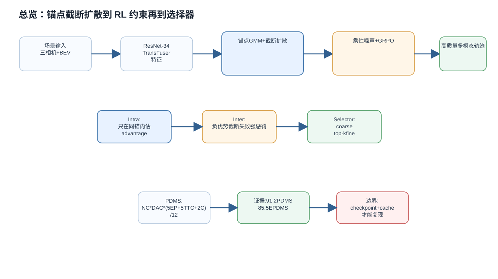
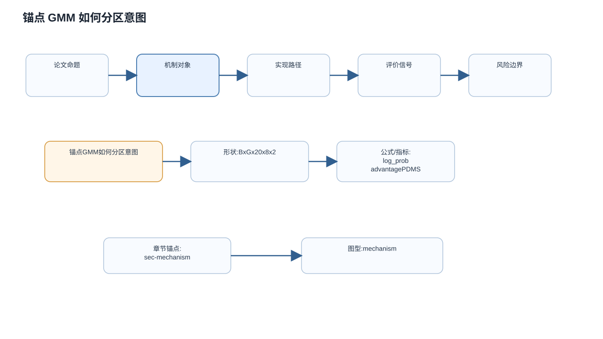
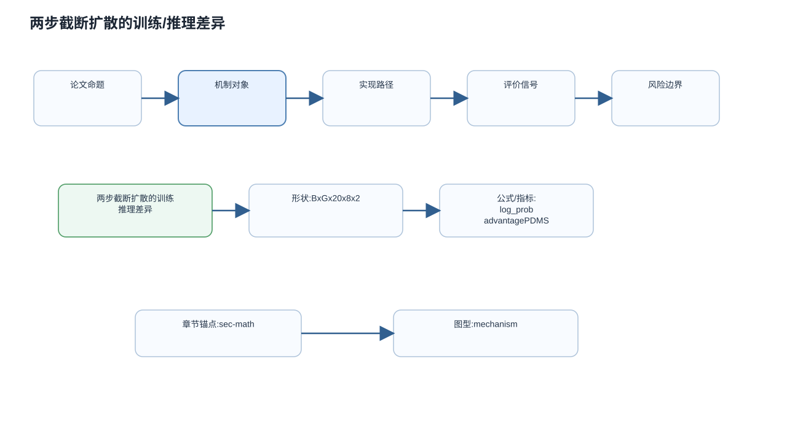
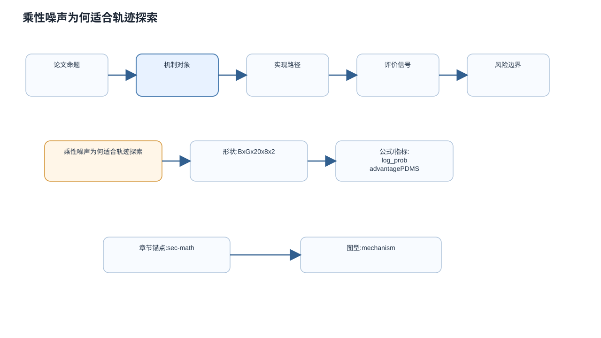
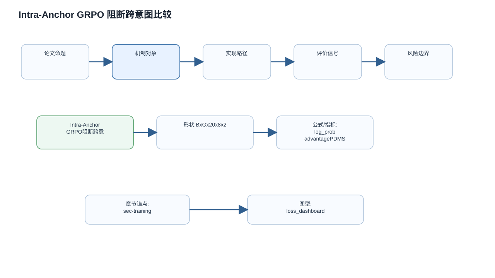
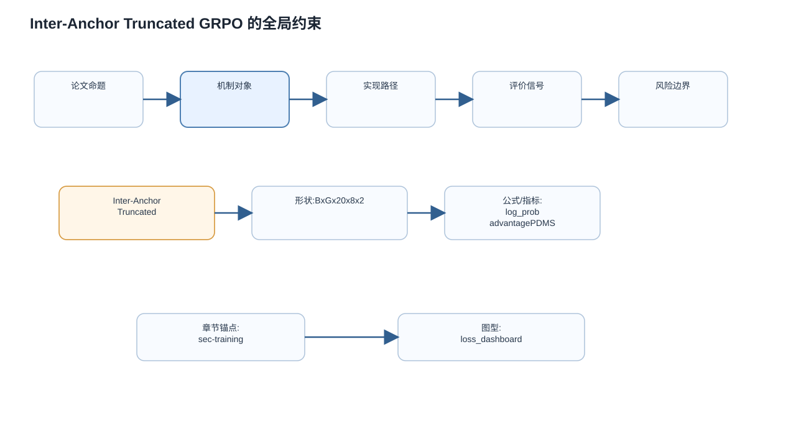
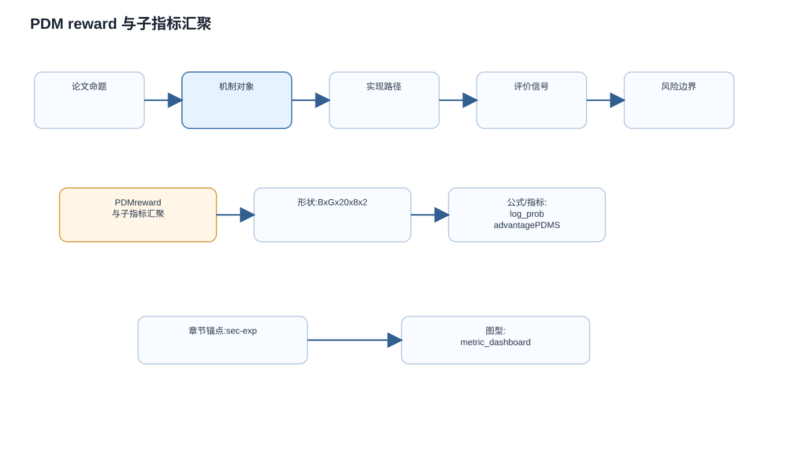
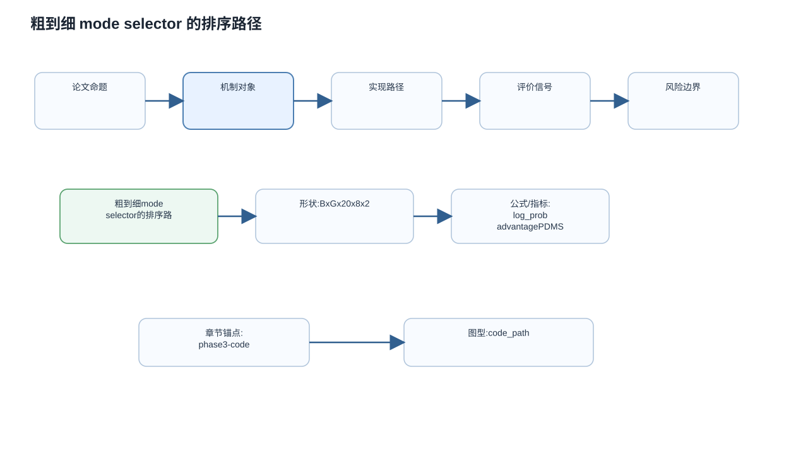
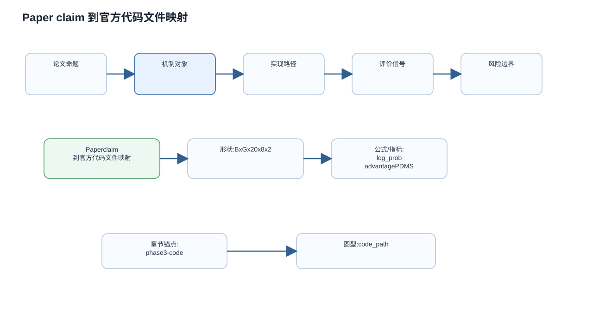
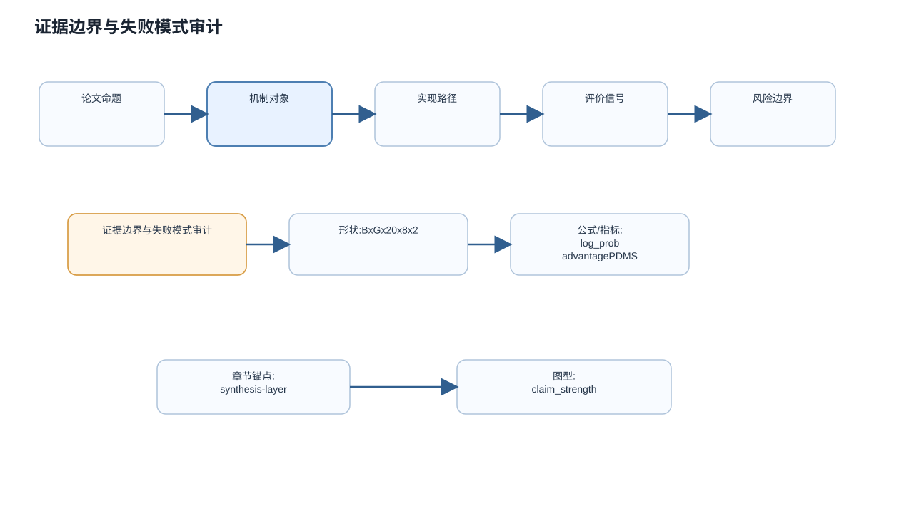

DiffusionDriveV2 完整深度 HTML 报告
综合讲解层：从论文问题到实验审计

五分钟概念图谱
| 维度 | 论文主张 | 本报告判定 |
|---|---|---|
| 问题 | 多模态轨迹缺少全量监督 | 成立但依赖 NAVSIM reward 覆盖 |
| 方法 | GRPO 适配锚点截断扩散 | 代码中可见分组 advantage 与硬惩罚 |
| 结果 | 91.2 PDMS / 85.5 EPDMS | 表格证据强，复现需 ckpt/cache |
DiffusionDriveV2 Phase 1/2 Monograph
Paper: `2512.07745`
Title: `DiffusionDriveV2: Reinforcement Learning-Constrained Truncated Diffusion Modeling in End-to-End Autonomous Driving`
Run root: `C:\Users\tianxl\.cache\arxiv_papers\2512.07745_rerun_latest`
Status: assembled from verified small-stage artifacts. This is a paper/external-synthesis monograph, not full workflow completion.
0. Completion Boundary
This monograph assembles:
- `phase1a_method_reading.md`
- `phase1b_math_training.md`
- `phase1c_experiment_audit.md`
- `experiment_claim_audit.json`
- `phase2_external_synthesis.md`
- `phase1_critical_synthesis.md`
Explicitly not completed in this artifact:
- Phase 3 official repo clone/read and paper-vs-code evidence.
- `code_evidence_index.json`, `issue_pr_evidence.json`, and code smoke testing.
- HTML/site reader, figures, full-paper translation, Q&A, and final completion gates.
- Feishu/cloud-doc output, disabled by this run's handoff.
1. Five-minute Concept Table
| Term | Meaning | Role in this paper | First evidence |
|---|---|---|---|
| E2E-AD | End-to-end autonomous driving policy from sensor input to ego trajectory | Task setting | `sec/3_preliminary.tex` |
| `tau` | Future ego trajectory as waypoints `{(x_n,y_n)}` | Planning output | `sec/3_preliminary.tex` |
| Anchor trajectory `a^k` | K-means clustered expert trajectory prototype | Driving-intention prior | `sec/3_preliminary.tex` |
| Anchor-GMM | Mixture over anchor-conditioned trajectory distributions | Multi-modal planning structure | `sec/3_preliminary.tex` |
| Truncated diffusion | Short denoising process around anchors | Efficient generator inherited from DiffusionDrive | `sec/3_preliminary.tex`, `sec/4_method.tex` |
| IL cold start | DiffusionDrive pretrained weights | Stabilizes RL fine-tuning | `sec/4_method.tex`, `sec/5_experiments.tex` |
| Denoising MDP | Treat each denoising step as a Gaussian policy transition | Enables policy-gradient training | `sec/4_method.tex` |
| Multiplicative exploration noise | Longitudinal/lateral scale-adaptive trajectory perturbation | Smooth exploration | `sec/4_method.tex` |
| Intra-Anchor GRPO | Group relative advantage inside one anchor | Improves each intention without cross-intention collapse | `sec/4_method.tex` |
| Inter-Anchor Truncated GRPO | Truncates non-collision negative advantage and penalizes collision | Adds cross-anchor absolute failure signal | `sec/4_method.tex` |
| Mode selector | Coarse-to-fine scorer with BCE and rank loss | Chooses final goal-aligned trajectory | `sec/4_method.tex`, `sec/X_suppl.tex` |
| PDMS / EPDMS | NAVSIM closed-loop metrics | Main evaluation targets | `sec/X_suppl.tex` |
2. Core Problem
DiffusionDriveV2 targets a specific failure mode in anchor-based truncated diffusion planning. Vanilla diffusion can collapse to one likely trajectory; DiffusionDrive uses predefined anchors to split trajectory space into multiple driving intentions and improves diversity. But DiffusionDrive is still trained by imitation learning. Each scene has one expert GT trajectory, so only the closest anchor receives direct positive trajectory supervision. Other anchors may remain diverse but low-quality, producing colliding, off-road, delayed-turn, or otherwise unsafe candidates.
The paper's problem is therefore not simply "make DiffusionDrive better." It is: preserve the multimodal benefit of anchor-GMM diffusion while constraining low-quality modes that IL does not supervise.
3. Method Mechanism
DiffusionDriveV2 keeps DiffusionDrive as the truncated diffusion generator and uses pretrained DiffusionDrive weights as cold start. The generator receives scene features and anchor-conditioned noisy trajectories, then refines them over a short denoising chain to output clean trajectory candidates.
The new part is how training signals are applied. The denoising chain is interpreted as a Gaussian policy sequence:
pi_theta(tau_{t-1}^k | tau_t^k, z, a^k)
= N(tau_{t-1}^k ; mu_theta(tau_t^k, t, z, a^k), eta(1-alpha_t)I)Training uses `eta=1` to keep a stochastic policy and evaluable likelihood; validation/inference uses `eta=0` to retain deterministic DDIM-style fast planning. This distinction is central: RL exploration is a training device, not a deployment-time random planner.
The policy gradient uses a final trajectory reward assigned back across denoising steps:
grad_theta J = E[ sum_t grad_theta log pi_theta(tau_{t-1}|tau_t) A_t ]DiffusionDriveV2 then modifies GRPO for anchor-based planning.
Intra-Anchor GRPO samples `G` trajectory variations under each anchor and computes group-relative advantage only inside that anchor:
A^{k,i} =
(r^{k,i} - mean({r^{k,1}, ..., r^{k,G}}))
/ std({r^{k,1}, ..., r^{k,G}})This prevents different intentions from competing directly. A left turn and a straight trajectory are not substitutes; both may be needed in different contexts.
Inter-Anchor Truncated GRPO then handles the weakness of purely local comparison:
A_trunc^{k,i} =
-1, if collision
max(0,A^{k,i}), otherwiseThis rule is best read as "relative improvement inside each mode, absolute punishment for collision." It does not globally rank all anchors; it injects a safety lower bound while protecting multimodality.
4. Training Topology
| Stage | Target | Objective | Key settings |
|---|---|---|---|
| Stage I | DiffusionDrive generator | `L_RL + lambda L_IL` | 10 epochs, batch 512, AdamW, lr `2e-4`, wd `1e-4`, warmup `0.10`, cosine schedule, BC/IL weight `0.1`, min exploration std `0.04`, min log-variance std `0.10`, discount `gamma=0.8` |
| Stage II | Mode selector | BCE + margin-rank loss | 20 epochs, batch 512, same lr/wd/schedule, 2 augmented trajectories, aug noise std `(0.1,0.2)`, 1% GTRS vocabulary |
| Inference | Generator + selector | Deterministic generation and trajectory scoring | 2 denoising steps, same ResNet-34/backbone family as DiffusionDrive/Transfuser |
The combined loss keeps an IL/BC regularizer because pure RL fine-tuning could overfit reward and degrade general driving behavior. The paper's BC weight is `0.1`.
5. Experiment Reading by Claim
5.1 Main closed-loop results
NAVSIM v1 reports DiffusionDriveV2 at `91.2` PDMS with ResNet-34. It improves over DiffusionDrive (`88.1`) by `+3.1`, over DIVER (`88.3`) by `+2.9`, and exceeds reported V2-99 Hydra-MDP/GoalFlow (`90.3`) despite using ResNet-34.
NAVSIM v2 reports DiffusionDriveV2 at `85.5` EPDMS, ahead of closest listed methods at `83.1`.
These tables support the reported ranking. They do not by themselves prove which mechanism caused the gain.
5.2 Raw diversity-quality evidence
The paper's strongest table is the raw pre-selector candidate evaluation:
| Method | Div. | PDMS@1 | PDMS@5 | PDMS@10 |
|---|---:|---:|---:|---:|
| Transfuser_TD | 0.1 | 85.7 | 85.7 | 85.7 |
| DiffusionDrive | 42.3 | 93.5 | 84.3 | 75.3 |
| DiffusionDriveV2 | 30.3 | 94.9 | 91.1 | 84.4 |
This shows the central trade-off: DiffusionDriveV2 has less raw diversity than DiffusionDrive but much higher lower-bound candidate quality. It raises both best-candidate quality and Top-10 quality before selector.
5.3 Component ablations
| Component | Disabled | Enabled | Delta | Interpretation |
|---|---:|---:|---:|---|
| Multiplicative vs additive noise | 89.7 | 90.1 | +0.4 | Supports smoother trajectory exploration. |
| Intra-Anchor GRPO | 89.2 | 90.1 | +0.9 | Strongest core ablation; anchor-aware grouping matters. |
| Inter-Anchor Truncated GRPO | 89.5 | 90.1 | +0.6 | Supports absolute-failure correction. |
| Selector coarse-to-fine + rank loss | 89.7 | 90.1 | +0.4 | Selector helps but is modest. |
The supplement's selector-only confounder check is important: DiffusionDrive with the stronger selector reaches `89.1`, but DiffusionDriveV2 with selector reaches `91.2`. This argues the full gain is not just a selector upgrade.
6. External-source Synthesis
Public-source indexing found arXiv, arXiv HTML, official GitHub repo metadata, GitHub issues/PR page metadata, Hugging Face checkpoint metadata, general web summaries, Horizon developer community, partial Zhihu signal, and negative/weak evidence for Papers with Code, Bilibili, and Reddit.
The official repo and Hugging Face metadata make Phase 3 concrete: later work should clone/read the implementation and inspect checkpoint/config boundaries. However, this monograph does not use repo content as evidence.
Issue/PR metadata already points to likely verification targets:
- metric reproduction and paper metric discrepancy;
- timestep sampling;
- log probability calculation;
- latency/throughput;
- cache/training/visualization issues.
These are not contradictions yet because issue details were not read in this phase. They are risk beacons for Phase 3.
Chinese/community sources mostly repeat the paper's own story: RL constrains low-quality modes, multiplicative noise supports exploration, Intra/Inter-Anchor GRPO handle local/global comparison. They help with positioning but do not independently validate the numbers.
7. Limitations and Reviewer Questions
1. What exactly is `R(tau_0)` in code? Does it equal PDMS components, a proxy, collision-only shaping, or a custom reward?
2. How is collision detected during training, and does the `-1` truncated penalty cover other absolute failures?
3. How is `log pi_theta` implemented with std floors and timestep sampling?
4. Does group-relative advantage include epsilon stabilization when group reward std is small?
5. Are ablations truly one-variable changes under identical configs?
6. How much of final PDMS gain comes from generator quality versus selector and training recipe?
7. Can the official checkpoint reproduce `91.2` PDMS / `85.5` EPDMS under published scripts?
8. Do issue/PR discussions reveal unresolved metric or implementation discrepancies?
8. Evidence-backed Conclusion
DiffusionDriveV2 has a coherent paper-internal argument. Its contribution is structurally well targeted: it does not abandon anchor-GMM truncated diffusion, but adds RL where IL is weakest. Intra-Anchor GRPO protects intention-level diversity; Inter-Anchor Truncated GRPO adds absolute failure pressure; multiplicative noise keeps exploration geometrically plausible; selector refinements improve final choice but do not fully explain the gain.
The strongest support comes from raw pre-selector Top-K quality, not only SOTA benchmark tables. The largest remaining uncertainty is implementation fidelity and reproducibility. Therefore this monograph completes the Phase 1/2 paper-and-source synthesis modules, while explicitly leaving Phase 3 code-backed verification and Phase 4 delivery gates pending.

机制：锚点、截断扩散和监督缺口
Phase 1A 方法阅读：问题、贡献边界与机制重构
Paper: `2512.07745`
Title: `DiffusionDriveV2: Reinforcement Learning-Constrained Truncated Diffusion Modeling in End-to-End Autonomous Driving`
阶段状态：`Phase 1A-min completed after retry2 stream recovery`
证据范围：仅使用已验证复制到本 run root 的论文 TeX/PDF 输入，以及 Phase 0/0.6 索引文件。本文件不使用官方代码作为证据，所有实现映射均标记为 `Phase 3 pending`。
1. 证据地图
本阶段直接读取并使用以下本地源文件：
| 证据文件 | 本阶段用途 |
|---|---|
| `tex_source/sec/0_abstract.tex` | 抽取论文对问题、方法、指标和核心 claim 的最短表述。 |
| `tex_source/sec/1_intro.tex` | 抽取研究动机、DiffusionDrive 的 IL 局限、RL 引入理由、Intra/Inter-anchor GRPO 的设计动机。 |
| `tex_source/sec/3_preliminary.tex` | 抽取 E2E-AD 轨迹定义、DiffusionDrive 的 GMM/anchor/truncated diffusion 基础形式，以及 IL 单正样本监督的结构性问题。 |
| `tex_source/sec/4_method.tex` | 抽取 DiffusionDriveV2 的方法模块：truncated diffusion generator、RL denoising MDP、scale-adaptive multiplicative noise、Intra-Anchor GRPO、Inter-Anchor Truncated GRPO、Mode Selector。 |
| `paper_source_index.json` | 确认论文结构、章节标题与本阶段读取范围。 |
| `source_search_log.json` / `private_corpus_search_log.json` | 仅作为外部证据已索引的背景，不在本阶段展开外部观点融合。 |
本阶段不覆盖：
- 数学/训练拓扑的完整推导：留给 `phase1b_math_training.md`。
- 实验 claim 的强弱审计：留给 `phase1c_experiment_audit.md` 和 `experiment_claim_audit.json`。
- 外部来源融合和负证据分析：留给 `phase2_external_synthesis.md`。
- 官方代码文件、函数、配置、数据流映射：留给 Phase 3 code-backed deep read。
- HTML、图、全文翻译、站点导入、Q&A 和最终 completion gate。
2. 论文究竟要修复什么问题
DiffusionDriveV2 的目标不是重新发明一个新的端到端规划范式，而是在 DiffusionDrive 这种“anchor-conditioned truncated diffusion planner”已经能生成多模态候选轨迹的前提下，修复一个更具体、更危险的缺陷：多模态候选轨迹中存在大量没有被 IL 显式约束的低质量负模式，导致“多样性”和“稳定高质量”之间出现结构性冲突。
论文在 `tex_source/sec/1_intro.tex :: Introduction` 中给出的背景链条是：
1. 单模态规划器只能回归一条轨迹，在高不确定场景下无法提出替代行为。
2. selection-based 方法使用静态轨迹 vocabulary，能表达多个候选，但灵活性有限。
3. vanilla diffusion 能动态生成轨迹，但容易 mode collapse，最后收缩到单一高概率行为。
4. DiffusionDrive 用 K-Means 得到的 predefined trajectory anchors 构造 GMM prior，把轨迹空间切成多个 intention subspace，从而改善 vanilla diffusion 的 mode collapse。
5. 但 DiffusionDrive 仍采用 imitation learning。每个场景只有一条专家轨迹，训练时通常只把离 GT 最近的 anchor 作为 positive mode，其他 anchor/mode 只通过 selector/BCE 侧面约束，轨迹质量本身缺少充分监督。
因此，DiffusionDriveV2 的核心问题定义可以写成：
> 在 anchor-GMM 截断扩散框架中，多模态先验让候选轨迹变多，但 IL 的单正样本监督无法保证所有候选模式都安全、高质量。系统最终不得不依赖下游 selector 从大量低质量候选中筛选，这在 OOD 或复杂场景下是脆弱的。
这解释了论文为什么不是简单地说“让 DiffusionDrive 更强”，而是把问题定位为 diversity versus consistent high quality dilemma。
3. 贡献边界
3.1 论文明确声称的贡献
根据 `tex_source/sec/0_abstract.tex` 和 `tex_source/sec/1_intro.tex :: contributions`，本论文声称：
- 引入 RL 来同时约束低质量模式并探索更优轨迹，从而解决 DiffusionDrive 在 IL 下的多样性/质量冲突。
- 将 GRPO 成功迁移到 truncated diffusion + GMM anchor 框架中，而不是直接把不同 driving intention 的样本放在一个 group 里比较。
- 提出 Intra-Anchor GRPO：只在同一 anchor 内做 group relative advantage，避免把“左转”和“直行”当作可互相替代的优劣关系。
- 提出 Inter-Anchor Truncated GRPO：保留 intra-anchor 相对改进的正信号，同时对全局绝对失败，尤其 collision，施加强惩罚。
- 使用 scale-adaptive multiplicative exploration noise 代替逐点 additive Gaussian noise，以保留轨迹几何连贯性。
- 在 NAVSIM v1/v2 closed-loop evaluation 上报告 91.2 PDMS 和 85.5 EPDMS，并声称达到新的记录。
3.2 本阶段不能确认的内容
这些内容在论文中被声称或暗示，但 Phase 1A 不把它们视为已验证结论：
- 指标提升到底来自 RL 目标、exploration noise、selector、backbone alignment，还是训练 recipe 的组合效应：需要 Phase 1C 的实验审计。
- Inter-anchor truncated GRPO 是否在所有非碰撞但低舒适性/低进度的失败中都给出足够信号：需要 Phase 1B/1C 结合 reward 定义和 ablation。
- mode selector 是否真的比原 DiffusionDrive selector 更稳健，还是只是在候选质量提升后更容易筛选：需要 Phase 1C 与 Phase 3。
- 官方代码是否完全实现论文公式、是否存在额外 engineering trick：Phase 3 pending。
- 论文 claim 与 GitHub/Hugging Face/社区讨论之间是否存在冲突：Phase 2 pending。
4. 总体架构与控制流重构
从 `tex_source/sec/3_preliminary.tex` 和 `tex_source/sec/4_method.tex` 可以把 DiffusionDriveV2 的控制流重构为六层：
1. **Scene encoding**：感知网络提取 BEV/scene features，论文在本阶段没有展开 backbone 细节；实现层映射 Phase 3 pending。
2. **Anchor-GMM prior**：沿用 DiffusionDrive 的预定义 anchor 轨迹集合，每个 anchor 表示一个 driving intention，例如直行、左转、变道、超车。
3. **Truncated diffusion generator**：从 anchored Gaussian distribution 采样 noisy trajectories，并用截断扩散 decoder 迭代 refine，输出每个 anchor 下的 clean trajectory。
4. **RL-constrained diffusion update**：把 denoising chain 视为 MDP，每个 conditional denoising step 是 Gaussian policy，允许用 log probability 和 advantage 做 policy gradient。
5. **Anchor-aware GRPO**：先在同一 anchor 内估计 group-relative advantage，再用 truncated rule 注入跨 anchor 的绝对失败惩罚。
6. **Mode selector**：候选轨迹先作为 query 与 BEV/agent/map features 交互，再通过 coarse-to-fine scorer 选择最终轨迹，并用 BCE 与 margin-rank loss 学习排序。
这一控制流的关键不是“扩散 + RL”四个字，而是论文把 RL 作用点放在 anchor-conditioned denoising policy 上，并且显式避免跨 intention 的朴素相对比较。
5. 机制逐项深读
5.1 Truncated Diffusion Generator
证据：`tex_source/sec/4_method.tex :: Truncated Diffusion Generator`
输入：
- perception network 提取的 scene features；
- anchor-conditioned noisy trajectories；
- 预训练 DiffusionDrive 权重提供的 IL cold start。
输出：
- 每个 anchor 对应的一组 refined clean trajectories；
- 后续 selector 可排序的多模态候选。
局部目标：
- 继承 DiffusionDrive 的多模态生成能力，不从零训练一个 RL planner。
- 让 RL 阶段从一个已有轨迹先验出发，避免早期 policy search 直接落入无意义轨迹空间。
为什么存在：
- 如果没有 IL cold start，RL 对高维连续轨迹的探索会非常昂贵且不稳定。
- 如果只保留 IL，负模式缺少轨迹级质量约束。DiffusionDriveV2 因此把 IL generator 当作起点，而不是终点。
相对 DiffusionDrive 的变化：
- generator 主体不是完全替换，而是被放入 RL-constrained training loop。
- 推理时仍保持 truncated diffusion 的快速生成路径；训练时引入探索噪声和 policy gradient。
待验证点：
- 论文说“directly employ DiffusionDrive as trajectory generator”，但具体哪些权重、模块和训练阶段被冻结/微调，需要 Phase 3 读代码确认。
5.2 RL for Diffusion Generator
证据：`tex_source/sec/4_method.tex :: Reinforcement Learning for Diffusion Generator`
论文把 denoising process 建模为 MDP。对每个 anchor，条件 denoising step 是一个 Gaussian policy：
- state-like 条件：当前 noisy trajectory、时间步、scene context、anchor；
- action-like 输出：下一个 denoising state / trajectory sample；
- policy mean：模型预测的 denoising mean；
- variance/noise schedule：由预定义 schedule 和训练时 noise setting 决定。
局部目标：
- 让每个最终轨迹可以接收 trajectory-level reward；
- 把 reward 信号通过 log-probability gradient 回传到 denoising steps；
- 补上 IL 无法约束所有负模式的问题。
机制意义：
- IL 的监督来自唯一 GT，天然偏向单个 closest anchor。
- RL 的监督来自 reward，可以评价所有采样轨迹，尤其是原先没有 GT 对齐的 negative modes。
- 这使“低质量但多样”的候选不再只是 selector 的负担，而能在 generator 训练阶段被压低。
待验证点：
- reward 具体包含哪些项、权重如何组合、是否使用 NAVSIM/PDMS 相关 proxy，需要 Phase 1B/1C。
- 训练稳定性是否依赖额外 clipping、normalization 或 batch construction，需要 Phase 3。
5.3 Scale-Adaptive Multiplicative Exploration Noise
证据：`tex_source/sec/4_method.tex :: Scale-Adaptive Multiplicative Exploration Noise`
论文认为逐点 additive Gaussian noise 不适合轨迹探索，原因是 trajectory waypoints 的近端和远端尺度不一致。逐点加噪会破坏轨迹几何结构，形成 jagged/broken path。
DiffusionDriveV2 改用 multiplicative noise：
- 不对每个 waypoint 独立加噪；
- 只引入 longitudinal 和 lateral 两个方向的乘性扰动；
- 用类似 `tau' = (1 + epsilon_mul) tau` 的形式整体缩放/扰动轨迹。
局部目标：
- 保留原轨迹的平滑性和连贯形状；
- 给 RL 提供“仍像一条可驾驶轨迹”的探索样本；
- 避免探索噪声本身制造大量无意义失败。
相对 additive noise 的变化：
- additive noise 更像局部 waypoint 抖动；
- multiplicative noise 更像对整条候选行为进行尺度自适应扰动，因此更符合轨迹规划的几何结构。
待验证点：
- 乘性噪声是否只在训练时开启、验证时完全关闭，论文文本说训练设 `eta=1`、validation 设 `eta=0`；实现细节 Phase 3 pending。
- 乘性扰动如何和 diffusion schedule 结合，需要 Phase 1B 复原算法。
5.4 Intra-Anchor GRPO
证据：`tex_source/sec/4_method.tex :: Intra-Anchor GRPO for Trajectory Generation`
核心洞察：
- anchor 不是普通 batch 维度，而是不同 driving intention 的分区。
- 不同 anchor 的轨迹不应该直接做优劣比较，例如左转和直行应当共存，而不是让更常见的直行 mode 吞掉左转 mode。
机制：
- 对每个 anchor 生成 G 个 trajectory variations；
- 只在同一 anchor 的 G 个样本内部计算 group-relative advantage；
- 用组内 reward 的均值和标准差做归一化；
- 将该 advantage 应用于该 anchor 的 denoising chain。
局部目标：
- 在每个 intention subspace 内提高轨迹质量；
- 避免跨 intention 比较导致 mode collapse；
- 不需要额外 value model，沿用 GRPO 的 relative baseline。
相对朴素 GRPO 的变化：
- 朴素做法会把所有 anchors 的样本放在一个 group 里；
- Intra-Anchor GRPO 把 group boundary 对齐到 anchor boundary；
- 这是一种结构先验：优化必须尊重 GMM 中每个 mode 的语义。
待验证点：
- group size G、reward batch construction、同一 anchor 内 sample 的噪声来源，需要 Phase 1B/3。
- 组内标准差很小时如何处理数值稳定，需要 Phase 3。
5.5 Inter-Anchor Truncated GRPO
证据：`tex_source/sec/4_method.tex :: Inter-Anchor Truncated GRPO for Trajectory Generation`
Intra-Anchor GRPO 解决了跨意图比较导致 mode collapse 的问题，但带来另一种局部比较偏差：
- 某个 anchor 内最好的样本可能仍然是危险轨迹；
- 如果只看组内相对优势，它可能得到正 advantage；
- 另一个 anchor 内安全但局部相对较差的样本可能得到负 advantage。
论文给出的原则是：reward relative improvements, but only penalize absolute failures。
机制：
- 非碰撞样本：把负 advantage 截断为 0，只保留正向改进信号；
- 碰撞样本：直接赋值为 -1 强惩罚；
- 然后用 truncated advantage 替代 Intra-Anchor GRPO 中的 advantage 进入 RL loss。
局部目标：
- 继续避免跨意图“谁更优”的硬比较；
- 但对 collision 这种绝对失败跨 anchor 统一惩罚；
- 让训练信号既保留多模态，又不纵容局部 group 内的危险最优。
关键理解：
- Inter-Anchor Truncated GRPO 并不是重新把所有 anchors 放回一个 global GRPO group。
- 它只引入一种跨 anchor 的绝对安全下界：collision 不能因为在本 anchor 内相对较好而被奖励。
待验证点：
- collision 之外的绝对失败是否也被处理，例如红灯、越界、comfort、progress 失败，需要 Phase 1B/1C。
- -1 惩罚的尺度是否和正 advantage 匹配，需要实验与代码审计。
5.6 Mode Selector
证据：`tex_source/sec/4_method.tex :: Mode Selector`
selector 的角色是从多模态候选中选出最符合目标的轨迹。论文设计包括：
- trajectory coordinates 作为 queries；
- 先和 BEV features 做 deformable spatial cross-attention；
- 再与 agent/map queries 做 cross-attention refinement；
- MLP 输出 score；
- coarse scorer 先选 top-k，再由 fine-grained scorer 做更细排序；
- 使用 BCE loss 和 margin-rank loss 学习选择与相对排序。
局部目标：
- 即使 generator 的候选质量提高，最终控制仍需要一个选择器；
- margin-rank loss 避免直接回归连续分数的困难，强调候选之间的相对质量区分。
本阶段判断：
- selector 不是论文问题的唯一解。论文真正想降低的是 selector 面对大量低质量候选时的负担。
- 如果 RL generator 没有减少低质量候选，selector 再强也只是事后过滤；如果 generator 候选整体变好，selector 才更稳。
待验证点：
- selector 的具体模块、特征维度、top-k 设置、coarse/fine scorer 是否是论文之外的工程核心，需要 Phase 3。
6. 容易误解的点
1. **DiffusionDriveV2 不是抛弃 DiffusionDrive。** 它显式使用 DiffusionDrive 作为 trajectory generator 和 IL cold start。
2. **RL 的作用不是简单提高单条轨迹分数。** 它主要用于给所有 modes，尤其负模式，提供 trajectory-level constraint。
3. **Intra-anchor 不等于保守。** 它限制 advantage comparison 的边界，是为了保住 driving intention 多样性。
4. **Inter-anchor truncated 不等于全局排序所有 anchors。** 它只是对碰撞等绝对失败提供跨 anchor 统一惩罚，并截断非碰撞负 advantage。
5. **multiplicative noise 不是为了增加随机性本身。** 它是为了让 exploration 仍保持轨迹几何结构，避免 additive point noise 破坏 smoothness。
6. **selector 不是补救所有低质量模式的唯一防线。** 论文动机恰恰是减少对 selector 的过度依赖。
7. 后续阶段开放问题
Phase 1B 需要回答：
- RL reward 的精确定义是什么？
- denoising discount `gamma` 如何设定，为什么能缓解 early denoising step instability？
- `eta=1` 训练和 `eta=0` 验证如何进入 likelihood / policy gradient 计算？
- IL loss 与 RL loss 的权重 `lambda` 在训练中如何影响模式保留和质量提升？
Phase 1C 需要回答：
- 91.2 PDMS / 85.5 EPDMS 的提升是否由关键组件贡献，还是由 backbone / training recipe / selector 共同造成？
- 消融表是否能单独支持 multiplicative noise、Intra-Anchor GRPO、Inter-Anchor Truncated GRPO 三个 claim？
- diversity-quality trade-off 的指标是否足够证明“解决 dilemma”，还是只证明主指标提升？
Phase 2 需要回答：
- 外部来源是否支持论文对 DiffusionDrive 局限的定位？
- 社区、repo、Hugging Face 或相关论文是否有相反证据或未公开 caveat？
Phase 3 需要回答：
- 官方 GitHub 代码是否实现所有论文公式和模块？
- code 中 reward、collision、selector、noise、group construction 是否和论文描述一致？
- 是否存在论文未写明但决定结果的工程技巧？
8. Phase 1A 小结
Phase 1A 的结论是：DiffusionDriveV2 的方法核心不是单纯“把 GRPO 加到扩散规划器”，而是在 DiffusionDrive 的 anchor-GMM 截断扩散结构上，重新定义 RL 的比较边界和失败惩罚边界。Intra-Anchor GRPO 保护 intention 多样性，Inter-Anchor Truncated GRPO 处理跨 intention 的绝对失败，multiplicative noise 让探索保留轨迹几何结构，selector 则承担最终候选排序。这个设计是否充分成立，还必须由 Phase 1B 的数学/训练复原、Phase 1C 的实验审计和 Phase 3 的代码证据共同确认。

数学/算法重构
Phase 1B 数学与训练拓扑：从 anchor-GMM 到 RL 约束的 denoising policy
Paper: `2512.07745`
Title: `DiffusionDriveV2: Reinforcement Learning-Constrained Truncated Diffusion Modeling in End-to-End Autonomous Driving`
Scope: Phase 1B small-stage artifact. No official code clone/read, no HTML/site/figure generation, no Feishu/cloud-doc output.
1. 证据范围
本阶段只使用已落盘论文证据：
| Evidence | Use |
|---|---|
| `tex_source/sec/3_preliminary.tex` | 轨迹表示、anchor-GMM、truncated diffusion、DiffusionDrive 的 IL objective。 |
| `tex_source/sec/4_method.tex` | RL denoising MDP、multiplicative exploration noise、Intra-Anchor GRPO、Inter-Anchor Truncated GRPO、mode selector loss。 |
| `tex_source/sec/5_experiments.tex` | 实现细节：ResNet-34、DiffusionDrive cold start、10 epoch RL、20 epoch selector、8 L20 GPUs、2 denoising steps inference。 |
| `tex_source/sec/X_suppl.tex` | PDMS/EPDMS metric formulas, optimizer, warmup, denoising std, log-variance std, discount factor, selector augmentation. |
| `tex_source/tables/hyperpara.tex` | Stage I/II hyperparameter table. |
本阶段不使用官方代码作为证据。凡涉及 reward 具体实现、collision 判定、group construction、selector top-k、batch 组织、数值稳定 trick 的判断，均标注为 `Phase 3 pending`。
2. 数学对象和训练问题
论文把规划输出定义为未来 ego waypoints：
tau = {(x_n, y_n)}_{n=1}^{N_f}这里 `N_f` 是 planning horizon。DiffusionDriveV2 的数学问题不是直接学习一个单峰 `p(tau | z)`，而是沿用 DiffusionDrive 的 anchor-conditioned Gaussian Mixture Model。给定 scene context `z` 和第 `k` 个 anchor `a^k`，单个 anchor 的轨迹分布被写作：
p(tau^k | a^k, z) = N(tau^k | a^k + mu^k(z), Sigma^k(z))整体多模态轨迹分布是 anchor mixture：
p(tau | z) = sum_k s(a^k | z) p(tau^k | a^k, z)这一层定义决定了后面所有 RL 设计的边界：anchor 不是普通样本索引，而是 intention partition。每个 anchor 对应一个行为意图区域，例如直行、左转、超车、跟车等。若直接跨 anchor 比较 reward，就会把不同意图误当成可互相替代的候选，导致常见模式吞掉少见但必要的行为。
DiffusionDrive 的 IL objective 只对最接近 GT 的 anchor 提供 trajectory reconstruction 正样本，其余 anchors 主要通过 selector/BCE 侧面约束：
L = sum_k [ y^k L_rec(tau_hat^k, tau_gt) + L_BCE(s_hat^k, y^k) ]论文的关键判断是：这种单 GT/单正模式训练不能充分惩罚所有低质量负模式。DiffusionDriveV2 因此把训练问题改写为：在保留 anchor-GMM 多模态结构的同时，用 trajectory-level reward 约束每个 anchor 下生成的候选质量。
3. Truncated diffusion 作为可优化 policy chain
DiffusionDrive 的 truncated diffusion 用较短的 diffusion schedule 从 anchor 扩散到 anchored Gaussian：
tau_t^k = sqrt(alpha_bar_t) a^k + sqrt(1 - alpha_bar_t) epsilon,
epsilon ~ N(0, I), t in [1, T_trunc], T_trunc << TDiffusionDriveV2 保留这套生成器，并使用 DiffusionDrive 预训练权重作为 IL cold start。论文明确说训练阶段从 DiffusionDrive 权重开始，推理阶段与 DiffusionDrive 类似，只需 `2` 个 denoising steps。
Phase 1B 的重构是：
1. `a^k` 提供意图先验和轨迹空间局部分区。
2. `tau_t^k` 是当前 noisy trajectory state。
3. `mu_theta(tau_t^k, t, z, a^k)` 是模型对下一步 denoising mean 的预测。
4. `tau_{t-1}^k` 是 policy 采样或确定性更新后的下一状态。
5. 最终 clean trajectory `tau_0^{k,i}` 接受 trajectory-level reward `R(tau_0^{k,i})`。
论文把每个 conditional denoising step 写作 Gaussian policy：
pi_theta(tau_{t-1}^k | tau_t^k, z, a^k)
= N(tau_{t-1}^k ; mu_theta(tau_t^k, t, z, a^k), eta(1 - alpha_t) I)这一步的含义是：只要 `eta > 0`，模型就有可评估的 Gaussian likelihood，因此可用 `log pi_theta` 做 REINFORCE / policy gradient。论文随后给出梯度形式：
grad_theta J(pi_theta^k)
= E_{pi_theta^k} [ sum_{t=1}^{T_trunc}
grad_theta log pi_theta^k(tau_{t-1}^k | tau_t^k) A_t^k ]关键点：reward 只在最终 clean trajectory 上计算，但通过 denoising step 的 log-probability 分摊回整个 truncated chain。这是 DPPO 风格迁移到轨迹 diffusion planner 的核心。
4. 训练时 DDPM 噪声与验证时 DDIM 确定性
论文强调 DiffusionDrive 使用 DDIM update 来减少 denoising steps，通常 `eta = 0`，即 deterministic sampler。若 `eta = 0`，policy 方差退化，likelihood 接近 Dirac distribution，不适合直接计算 `log pi_theta` 做 policy gradient。
DiffusionDriveV2 的处理是：
| Phase | eta | Effect |
|---|---:|---|
| Training | `1` | 等价于 DDPM 式随机采样，提供 exploration 和 Gaussian likelihood。 |
| Validation / inference | `0` | 保持确定性、快速、可复现的 truncated diffusion inference。 |
这个 train-vs-inference 差异很重要：论文不是要在部署时引入随机摇摆，而是只在训练中打开随机性，使 RL 能探索并获得 policy likelihood；验证/推理仍维持 2-step deterministic planner。
需要 Phase 3 确认的实现点：
- `eta=1` 是否只作用于 RL fine-tuning，还是也作用于 selector augmentation 数据生成。
- likelihood 的 `eta(1-alpha_t)I` 是否在代码里另有 clamp、std floor 或 log-variance floor。
- `T_trunc` 与 `N_infer=2` 在训练和推理是否完全一致。
5. Scale-adaptive multiplicative exploration noise
论文认为 point-wise additive Gaussian noise 不适合 trajectory exploration，因为 waypoint 的近端/远端尺度不一致。对每个 waypoint 独立加噪会破坏轨迹几何连续性，形成 jagged/broken path。DiffusionDriveV2 改用两个方向的乘性噪声：
tau' = (1 + epsilon_mul) tau
epsilon_mul = (epsilon_long, epsilon_lat)Phase 1B 的机制解释：
| Noise | How it perturbs | Planning consequence |
|---|---|---|
| Additive waypoint noise | 每个 waypoint 独立偏移 | 容易破坏平滑性，生成不像可驾驶轨迹的探索样本。 |
| Multiplicative longitudinal/lateral noise | 整体沿纵向/横向缩放或扰动 | 保留轨迹形状，探索仍处在可驾驶候选附近。 |
Supplement 的训练细节进一步给出两个 floor：
- multiplicative exploration noise minimum std: `0.04`
- Gaussian likelihood log-variance minimum std: `0.10`
论文给出的理由分别是：前者防止 exploration entropy collapse，后者避免 `log pi_theta(tau_{t-1}^{k,i} | tau_t^{k,i})` 的梯度幅值过大。这里说明作者实际在做的是“保持足够探索，同时限制 likelihood 数值爆炸”的稳定性设计。
需要 Phase 3 确认的实现点：
- 乘性噪声是按 batch、anchor、sample、trajectory 分别采样，还是共享某些维度。
- long/lat 坐标系如何定义，是 ego frame 还是轨迹局部方向。
- std floor 是直接作用于 sampling std、log prob std，还是通过 variance clamp。
6. Intra-Anchor GRPO
DiffusionDriveV2 的第一个关键 RL 约束是把 GRPO group 限定在同一 anchor 内。对每个 anchor `k`，采样 `G` 条 trajectory variations，得到最终 clean trajectories：
{ tau_0^{k,1}, tau_0^{k,2}, ..., tau_0^{k,G} }对每条 trajectory 计算 reward：
r^{k,i} = R(tau_0^{k,i})然后在同一 anchor 的 `G` 个样本内计算 group-relative advantage：
A^{k,i} =
(r^{k,i} - mean({r^{k,1}, ..., r^{k,G}}))
/ std({r^{k,1}, ..., r^{k,G}})RL loss 写作：
L_RL =
- 1/N_anchor sum_k 1/G sum_i 1/T_trunc sum_t
gamma_{t-1} log pi_theta(tau_{t-1}^{k,i} | tau_t^{k,i}) A^{k,i}这个 loss 有三个设计点：
1. **anchor 内归一化**：不跨 driving intention 比较。
2. **无 value model**：沿用 GRPO 的 group baseline，不额外训练 critic。
3. **final reward broadcast 到 denoising chain**：一个 `R(tau_0)` 作用于所有 denoising steps，但用 `gamma_{t-1}` 做 step-wise discount。
Supplement 给出 `gamma = 0.8`。论文说 discount 用于 downweight earlier noisy denoising steps，因为早期 step 的轨迹噪声大、与最终可驾驶质量关系更间接，直接用同一 reward 强度更新容易不稳定。
Phase 1B 的理解是：Intra-Anchor GRPO 是“局部改良器”。它鼓励每个 intention subspace 内产生更好的候选，但不让不同 intention 之间相互淘汰。
7. Inter-Anchor Truncated GRPO
Intra-Anchor GRPO 的问题是只看组内相对好坏。若某个 anchor 内所有样本都很差，其中“最不差”的危险轨迹仍可能获得正 advantage；另一个 anchor 内安全但组内相对普通的轨迹可能获得负 advantage。这会产生局部相对标准与全局安全标准不一致的问题。
论文提出的原则是：
reward relative improvements, but only penalize absolute failures实现为对 Intra-Anchor advantage 做截断：
A_trunc^{k,i} =
-1, if collision
max(0, A^{k,i}), otherwise然后用 `A_trunc^{k,i}` 替换 `A^{k,i}` 进入 `L_RL`。
这不是一个标准的“全局跨 anchor GRPO”。它的作用更窄：
- 非 collision 样本：保留正向相对改进，截断负 advantage 到 0，避免不同意图互相压制。
- collision 样本：无论其在本 anchor 内是否相对较好，都给统一负信号。
因此 Inter-Anchor Truncated GRPO 可以被理解为一个安全下界注入器：它不重新排列所有 anchors 的优劣，但明确告诉模型 collision 是跨 anchor 的绝对失败。
需要 Phase 3 确认的实现点：
- `collision` 的判定来自 NAVSIM metric、PDM scorer、近似 checker，还是训练期 reward proxy。
- 除 collision 外，drivable area、TTC、progress、comfort 是否也会进入 reward 或 failure mask。
- `-1` 与 normalized positive advantage 的尺度是否存在额外 clip/normalize。
8. Combined objective: RL + IL regularization
论文没有只优化 RL loss，而是加入 imitation learning regularization：
L = L_RL + lambda L_ILSupplement/hyperparameter table 给出 BC/IL loss weight 为 `0.1`。论文把它类比为 GRPO 原始形式中对 reference policy 的 KL regularization：防止 RL overfitting 或破坏基础驾驶能力。
Phase 1B 的训练解释：
| Objective | Role |
|---|---|
| `L_RL` | 用 trajectory-level reward 约束所有 modes，尤其惩罚低质量候选。 |
| `L_IL` / BC loss | 保持 DiffusionDrive cold-start 学到的专家分布，不让 RL 把 planner 推离基础驾驶行为。 |
| `lambda=0.1` | 论文给出的 BC/IL regularization 权重。 |
这也解释了为什么 DiffusionDriveV2 是 fine-tuning style，而不是从零开始的 RL planner。其稳定性依赖于 DiffusionDrive 预训练分布、RL reward 和 IL regularization 三者的平衡。
9. Mode selector 的训练目标
Generator 阶段之后，论文训练一个 mode selector，从多模态候选中选择最 goal-aligned 的 trajectory。方法结构包括：
- trajectory coordinates as queries;
- deformable spatial cross-attention with BEV features;
- cross-attention refinement with agent and map queries;
- MLP score head;
- coarse-to-fine scorer: coarse 先选 top-k，fine 再精排。
Selector 训练有两个 loss：
1. BCE loss：学习候选是否为目标选择。
2. Margin-rank loss：学习候选间相对质量顺序。
论文给出 ranking loss：
L_rank = 1/N sum_{i,j} max(0,
- sign(s_i - s_j) * (s_hat_i - s_hat_j) + m)其中 `s` 是 ground-truth score，`s_hat` 是 predicted score，`m` 是 margin。这个 loss 避免直接回归连续指标绝对值，而是训练 selector 判断相对优劣。
Supplement 给出 Stage II 训练设置：
| Item | Value |
|---|---:|
| Epochs | 20 |
| Batch size | 512 |
| Learning rate | `2e-4` |
| Weight decay | `1e-4` |
| Warmup ratio | `0.10` |
| LR schedule | Cosine |
| Number of augmented trajectories | 2 |
| Augmentation noise std | `(0.1, 0.2)` |
| GTRS vocabulary percentage | `1%` |
Selector augmentation 的含义是：作者不只用 generator 原始输出训练 selector，还通过 multiplicative Gaussian noise 和少量 GTRS fixed vocabulary trajectory 扩充候选分布，以增强 selector 对扰动和外部候选的鲁棒性。
10. 训练拓扑总表
| Stage | Trainable target | Initialization / input | Loss / objective | Key hyperparameters | Evidence |
|---|---|---|---|---|---|
| Stage I: RL generator fine-tuning | DiffusionDrive truncated diffusion generator | DiffusionDrive pretrained weights, NAVSIM `navtrain`, anchor-conditioned noisy trajectories | `L_RL + 0.1 L_IL`, Intra-Anchor GRPO, Inter-Anchor Truncated GRPO | 10 epochs, batch 512, AdamW, lr `2e-4`, wd `1e-4`, cosine, warmup `0.10`, min exploration std `0.04`, min log-variance std `0.10`, gamma `0.8` | `sec/5_experiments.tex`, `sec/X_suppl.tex`, `tables/hyperpara.tex` |
| Stage II: mode selector training | Coarse-to-fine selector | Multi-modal trajectories from model, augmented trajectories, 1% GTRS vocab | BCE + margin-rank loss | 20 epochs, batch 512, lr `2e-4`, augmentation std `(0.1,0.2)`, 2 augmented trajectories | `sec/4_method.tex`, `sec/X_suppl.tex`, `tables/hyperpara.tex` |
| Inference | Generator + selector | Scene inputs: three forward camera crops concatenated as 1024x256 and rasterized BEV LiDAR representation | Deterministic trajectory generation + selector score | 2 denoising steps, `eta=0` validation/inference implied | `sec/5_experiments.tex`, `sec/4_method.tex` |
Implementation details reported by paper:
- same ResNet-34 backbone as Transfuser and DiffusionDrive;
- same diffusion decoder size as DiffusionDrive;
- three cropped/downscaled forward-facing camera images concatenated to `1024 x 256`;
- rasterized BEV representation of LiDAR point cloud;
- total batch size `512` distributed across `8 NVIDIA L20 GPUs`.
11. Metric formulas used as reward/evaluation context
Supplement defines NAVSIM v1 PDMS:
PDMS = NC * DAC * ((5*EP + 5*TTC + 2*C) / 12)where `NC`, `DAC`, `TTC`, `C`, `EP` are No At-Fault Collisions, Drivable Area Compliance, Time to Collision, Comfort, and Ego Progress.
NAVSIM v2 EPDMS is:
EPDMS = NC * DAC * DDC * TL *
(5*TTC + 2*C + 5*EP + 5*LK + 5*EC) / 22with added Driving Direction Compliance, Traffic Lights Compliance, Lane Keeping, History Comfort, and Extended Comfort.
Important boundary: the paper reports these metric formulas, but Phase 1B cannot prove the RL reward equals exactly PDMS/EPDMS. The method section denotes reward abstractly as `R(tau_0^{k,i})`. Whether training reward uses full NAVSIM scorer, a decomposed proxy, collision-only components, or other engineering reward shaping remains `Phase 3 pending`.
12. Failure modes implied by the math
1. **Group std degeneracy**: if all `G` samples under an anchor receive similar rewards, `std` can be small. The paper formula does not describe epsilon stabilization. Code audit must check this.
2. **Collision-only truncation may be narrow**: the truncated rule explicitly mentions collision. If other absolute failures are only handled indirectly through reward, dangerous but non-colliding behaviors may receive weak penalties.
3. **Positive-only non-collision update can reduce corrective pressure**: `max(0, A)` removes negative feedback for non-collision local underperformers. This protects diversity, but may slow cleanup of low-progress or uncomfortable candidates.
4. **Reward broadcast across denoising steps is approximate**: one final reward is assigned to every denoising step. `gamma=0.8` mitigates early-step instability but does not identify which step caused the final failure.
5. **Train/inference mismatch**: training uses stochastic DDPM-like updates; inference uses deterministic DDIM-like updates. The claim depends on RL improvements transferring to deterministic inference.
6. **Selector remains a possible confounder**: selector is stronger than DiffusionDrive's original classifier. Phase 1C must separate generator quality from selector improvement using raw Top-K and selector ablations.
13. Phase 1B conclusion
DiffusionDriveV2 的数学核心是把 DiffusionDrive 的 anchor-conditioned truncated denoising chain 改写成可做 policy gradient 的 Gaussian policy sequence，并在 GRPO 的 group definition 上加入 driving-intention 先验。Intra-Anchor GRPO 在每个 anchor 内做相对优势估计，避免跨 intention 比较导致 mode collapse；Inter-Anchor Truncated GRPO 不恢复全局排序，而是给 collision 这类绝对失败统一负信号，并截断非 collision 负 advantage 以保护多模态。训练拓扑上，Stage I 是 DiffusionDrive cold start 上的 RL+IL fine-tuning，Stage II 是带 augmentation 的 coarse-to-fine selector 训练，推理仍保持 2-step deterministic truncated diffusion。
本阶段已经完成数学/训练重构，但以下问题必须留给后续阶段：reward 具体组成、collision/failure mask 实现、group/std 稳定性、selector top-k 和代码级 module mapping。



算法伪代码：Anchored Truncated GRPO
for scene in navtrain:
sample grouped trajectories around each anchor
score candidates with PDM reward
normalize advantages within each anchor
truncate negative cross-anchor advantages
set NC/DAC failures to strong penalty
optimize diffusion log-prob plus IL fallback训练拓扑和 train-vs-inference 差异
| 阶段 | 官方设置 | 代码证据 |
|---|---|---|
| RL | 10 epoch | docs/train_eval.md + rl_agent |
| Selector | 20 epoch | sel_agent + train_eval |
| Eval | fast PDM score | run_pdm_score_fast.py command |
深度展开 1: DiffusionDriveV2 的关键不是把 RL 粗暴套到扩散规划器，而是承认锚点 GMM 中不同 anchor 表示不同驾驶意图。若把所有 anchor 的候选放在同一个 advantage 池里比较，直行、左转、变道会互相压制，最终仍可能回到 mode collapse。因此报告把训练机制拆成同锚组内相对改进、跨锚绝对失败惩罚、以及 selector 代理 PDM 排序三层。这个拆分也解释了为什么实验必须同时看 PDMS、Top-K PDMS、diversity 和 selector-only confounder，而不能只看最终 leaderboard 分数。
深度展开 2: DiffusionDriveV2 的关键不是把 RL 粗暴套到扩散规划器，而是承认锚点 GMM 中不同 anchor 表示不同驾驶意图。若把所有 anchor 的候选放在同一个 advantage 池里比较，直行、左转、变道会互相压制，最终仍可能回到 mode collapse。因此报告把训练机制拆成同锚组内相对改进、跨锚绝对失败惩罚、以及 selector 代理 PDM 排序三层。这个拆分也解释了为什么实验必须同时看 PDMS、Top-K PDMS、diversity 和 selector-only confounder，而不能只看最终 leaderboard 分数。
深度展开 3: DiffusionDriveV2 的关键不是把 RL 粗暴套到扩散规划器，而是承认锚点 GMM 中不同 anchor 表示不同驾驶意图。若把所有 anchor 的候选放在同一个 advantage 池里比较，直行、左转、变道会互相压制，最终仍可能回到 mode collapse。因此报告把训练机制拆成同锚组内相对改进、跨锚绝对失败惩罚、以及 selector 代理 PDM 排序三层。这个拆分也解释了为什么实验必须同时看 PDMS、Top-K PDMS、diversity 和 selector-only confounder，而不能只看最终 leaderboard 分数。
深度展开 4: DiffusionDriveV2 的关键不是把 RL 粗暴套到扩散规划器，而是承认锚点 GMM 中不同 anchor 表示不同驾驶意图。若把所有 anchor 的候选放在同一个 advantage 池里比较，直行、左转、变道会互相压制，最终仍可能回到 mode collapse。因此报告把训练机制拆成同锚组内相对改进、跨锚绝对失败惩罚、以及 selector 代理 PDM 排序三层。这个拆分也解释了为什么实验必须同时看 PDMS、Top-K PDMS、diversity 和 selector-only confounder，而不能只看最终 leaderboard 分数。
深度展开 5: DiffusionDriveV2 的关键不是把 RL 粗暴套到扩散规划器，而是承认锚点 GMM 中不同 anchor 表示不同驾驶意图。若把所有 anchor 的候选放在同一个 advantage 池里比较，直行、左转、变道会互相压制，最终仍可能回到 mode collapse。因此报告把训练机制拆成同锚组内相对改进、跨锚绝对失败惩罚、以及 selector 代理 PDM 排序三层。这个拆分也解释了为什么实验必须同时看 PDMS、Top-K PDMS、diversity 和 selector-only confounder，而不能只看最终 leaderboard 分数。
深度展开 6: DiffusionDriveV2 的关键不是把 RL 粗暴套到扩散规划器，而是承认锚点 GMM 中不同 anchor 表示不同驾驶意图。若把所有 anchor 的候选放在同一个 advantage 池里比较，直行、左转、变道会互相压制，最终仍可能回到 mode collapse。因此报告把训练机制拆成同锚组内相对改进、跨锚绝对失败惩罚、以及 selector 代理 PDM 排序三层。这个拆分也解释了为什么实验必须同时看 PDMS、Top-K PDMS、diversity 和 selector-only confounder，而不能只看最终 leaderboard 分数。
实验 claim-evidence audit
Phase 1C 实验审计：按 claim 阅读 NAVSIM、diversity/top-k 与消融证据
Paper: `2512.07745`
Scope: Phase 1C small-stage artifact. This is an evidence audit, not final workflow completion. No official code clone/read, no HTML/site/figure generation, no Feishu/cloud-doc output.
1. 证据范围
| Evidence | What it proves |
|---|---|
| `tex_source/sec/5_experiments.tex` | Dataset, implementation details, main results, diversity/top-k metric, ablation descriptions. |
| `tex_source/sec/X_suppl.tex` | PDMS/EPDMS formulas, training hyperparameters, selector ablations, qualitative comparisons. |
| `tex_source/tables/navsim.tex` | NAVSIM v1 closed-loop comparison. |
| `tex_source/tables/navsimv2.tex` | NAVSIM v2 extended closed-loop comparison. |
| `tex_source/tables/div.tex` | Raw generated trajectory diversity and PDMS@K before selector. |
| `tex_source/tables/abl_1.tex` | Additive versus multiplicative exploration noise. |
| `tex_source/tables/abl_intra.tex` | Intra-Anchor GRPO ablation. |
| `tex_source/tables/abl_2.tex` | Inter-Anchor Truncated GRPO ablation. |
| `tex_source/tables/abl_3.tex` | Coarse-to-fine selector and rank loss ablation. |
| `tex_source/tables/abl_selector.tex` | DiffusionDrive with stronger selector versus DiffusionDriveV2. |
This audit treats paper tables as primary evidence, but does not independently rerun NAVSIM or inspect code. Reproducibility and implementation fidelity remain Phase 3/Phase 4 concerns.
2. Claim map
| Claim | Evidence class | Strength | Main caveat |
|---|---|---|---|
| DiffusionDriveV2 reaches state-of-the-art closed-loop performance on NAVSIM v1/v2. | Main benchmark tables. | Strong within reported table. | Requires code/checkpoint/rerun verification for reproducibility. |
| RL-constrained generator improves the diversity-quality dilemma, not just top-1 selection. | Raw generated trajectories before selector: Div, PDMS@1/5/10. | Stronger than selector-only evidence. | Only compared against diffusion-style generators in this raw-output table. |
| Multiplicative exploration noise is better than additive noise. | `abl_1`: PDMS 90.1 vs 89.7. | Moderate. | Gain is +0.4 PDMS in short/fewer-epoch ablation. |
| Intra-Anchor GRPO matters for anchor-GMM planners. | `abl_intra`: PDMS 90.1 vs 89.2. | Moderate to strong. | Ablation setting is fewer epochs, not full main training. |
| Inter-Anchor Truncated GRPO adds global failure information. | `abl_2`: PDMS 90.1 vs 89.5. | Moderate. | Evidence supports metric improvement, but collision/failure mechanism needs code/reward audit. |
| Stronger selector is not the sole reason for improvement. | `abl_selector`: DiffusionDrive + selector 89.1 vs DiffusionDriveV2 + selector 91.2. | Strong against simple selector-only explanation. | Selector training details still need code confirmation. |
3. NAVSIM v1 closed-loop result
NAVSIM v1 `navtest` table reports DiffusionDriveV2 with ResNet-34:
| Method | Backbone | NC | DAC | TTC | Comfort | EP | PDMS |
|---|---|---:|---:|---:|---:|---:|---:|
| DiffusionDrive | ResNet-34 | 98.2 | 96.2 | 94.7 | 100.0 | 82.2 | 88.1 |
| DIVER | ResNet-34 | 98.5 | 96.5 | 94.9 | 100.0 | 82.6 | 88.3 |
| DriveSuprim | ResNet-34 | 97.8 | 97.3 | 93.6 | 100.0 | 86.7 | 89.9 |
| Hydra-MDP | V2-99 | 98.4 | 97.8 | 93.9 | 100.0 | 86.5 | 90.3 |
| GoalFlow | V2-99 | 98.4 | 98.3 | 94.6 | 100.0 | 85.0 | 90.3 |
| DiffusionDriveV2 | ResNet-34 | 98.3 | 97.9 | 94.8 | 99.9 | 87.5 | 91.2 |
The paper's stated comparisons are numerically supported:
- Compared with DiffusionDrive, PDMS improves from `88.1` to `91.2`, a `+3.1` gain.
- EP improves from `82.2` to `87.5`, a `+5.3` gain.
- Compared with DIVER, PDMS improves from `88.3` to `91.2`, a `+2.9` gain.
- With ResNet-34, DiffusionDriveV2 also exceeds the reported V2-99 Hydra-MDP and GoalFlow PDMS of `90.3`.
Claim strength: strong for reported closed-loop benchmark ranking. The caveat is not table-internal but process-level: no independent rerun, no checkpoint verification, and no official-code evidence have been produced in this phase.
4. NAVSIM v2 extended closed-loop result
NAVSIM v2 table reports:
| Method | NC | DAC | DDC | TL | EP | TTC | LK | HC | EC | EPDMS |
|---|---:|---:|---:|---:|---:|---:|---:|---:|---:|---:|
| Transfuser | 96.9 | 89.9 | 97.8 | 99.7 | 87.1 | 95.4 | 92.7 | 98.3 | 87.2 | 76.7 |
| Hydra-MDP++ | 97.2 | 97.5 | 99.4 | 99.6 | 83.1 | 96.5 | 94.4 | 98.2 | 70.9 | 81.4 |
| DriveSuprim | 97.5 | 96.5 | 99.4 | 99.6 | 88.4 | 96.6 | 95.5 | 98.3 | 77.0 | 83.1 |
| ARTEMIS | 98.3 | 95.1 | 98.6 | 99.8 | 81.5 | 97.4 | 96.5 | 98.3 | - | 83.1 |
| DiffusionDriveV2 | 97.7 | 96.6 | 99.2 | 99.8 | 88.9 | 97.2 | 96.0 | 97.8 | 91.0 | 85.5 |
This supports the claim that DiffusionDriveV2 sets the best reported EPDMS among table entries. The evidence is slightly less clean than NAVSIM v1 because ARTEMIS has a missing `EC` entry in the table. However, the final EPDMS comparison still reports DiffusionDriveV2 at `85.5`, ahead of the closest listed methods at `83.1`.
Claim strength: strong for table ranking; moderate for causal attribution because the v2 table is not paired with component ablations.
5. Raw diversity-quality evidence before selector
The most important experiment for the paper's central thesis is `tables/div.tex`, because it evaluates raw generated trajectories before DiffusionDrive's classifier or DiffusionDriveV2's selector.
| Method | Div. | PDMS@1 | PDMS@5 | PDMS@10 | Interpretation |
|---|---:|---:|---:|---:|---|
| Transfuser_TD | 0.1 | 85.7 | 85.7 | 85.7 | Near deterministic, stable but no meaningful diversity. |
| DiffusionDrive | 42.3 | 93.5 | 84.3 | 75.3 | Very diverse but quality drops sharply in lower-ranked candidates. |
| DiffusionDriveV2 | 30.3 | 94.9 | 91.1 | 84.4 | Lower diversity than DiffusionDrive, but much stronger Top-5/Top-10 quality. |
This table directly supports the paper's "diversity versus consistent high quality" framing:
- DiffusionDrive has high raw diversity (`42.3`) but low lower-bound quality (`PDMS@10=75.3`).
- DiffusionDriveV2 keeps meaningful diversity (`30.3`) while raising `PDMS@10` to `84.4`.
- DiffusionDriveV2 also raises the best candidate quality (`PDMS@1=94.9` versus DiffusionDrive `93.5`).
This is stronger evidence than final selected trajectory scores alone, because it evaluates the generator before the selector. It indicates the RL objective improves candidate-set quality, not merely final selection.
Caveat: the table compares only three methods in the raw-output setting. It does not show raw Top-K distributions for DIVER, DriveSuprim, Hydra-MDP, or other non-diffusion methods, partly because the paper says deterministic regression/selection methods do not generate comparable stochastic trajectory sets.
6. Exploration noise ablation
`abl_1` reports:
| Noise | NC | DAC | TTC | Comfort | EP | PDMS |
|---|---:|---:|---:|---:|---:|---:|
| Additive | 98.1 | 97.2 | 94.4 | 99.9 | 85.3 | 89.7 |
| Multiplicative | 98.1 | 97.6 | 94.5 | 99.9 | 85.7 | 90.1 |
The evidence supports the direction of the claim: multiplicative noise is better than additive noise in this ablation, with `+0.4` PDMS, `+0.4` DAC, and `+0.4` EP.
Claim strength: moderate. The result is consistent with the geometric argument in Phase 1B, but the margin is small and the paper notes ablations are trained for fewer epochs. This should be presented as supporting evidence, not as an overwhelming proof by itself.
7. Intra-Anchor GRPO ablation
`abl_intra` reports:
| Intra-Anchor | NC | DAC | TTC | Comfort | EP | PDMS |
|---|---:|---:|---:|---:|---:|---:|
| Disabled | 97.9 | 97.3 | 93.8 | 99.5 | 84.9 | 89.2 |
| Enabled | 98.1 | 97.6 | 94.5 | 99.9 | 85.7 | 90.1 |
The `+0.9` PDMS gain is the largest among the three core component ablations in this subset. It supports the paper's claim that anchor-aware group boundaries matter. Improvements appear across NC, DAC, TTC, Comfort, and EP, not only one metric.
Claim strength: moderate to strong. It is well aligned with the method's core logic, but still needs code-level confirmation that the disabled variant differs only in group boundary and not other training mechanics.
8. Inter-Anchor Truncated GRPO ablation
`abl_2` reports:
| Inter-Trunc. | NC | DAC | TTC | Comfort | EP | PDMS |
|---|---:|---:|---:|---:|---:|---:|
| Disabled | 97.7 | 97.3 | 93.6 | 99.9 | 85.7 | 89.5 |
| Enabled | 98.1 | 97.6 | 94.5 | 99.9 | 85.7 | 90.1 |
The `+0.6` PDMS gain supports the claim that local intra-anchor comparison is insufficient and that a cross-anchor absolute-failure signal helps. The strongest submetric changes are NC (`+0.4`) and TTC (`+0.9`), which are directionally consistent with a collision/safety-related truncation rule.
Claim strength: moderate. The ablation supports metric improvement, but the paper table cannot by itself prove the exact causal mechanism "collision penalty fixed misleading local positive advantages." That mechanism requires reward/failure-mask code audit or additional diagnostic plots.
9. Selector design ablations
`abl_3` reports:
| Model | Description | NC | DAC | TTC | Comfort | EP | PDMS |
|---|---|---:|---:|---:|---:|---:|---:|
| M0 | Base selector | 97.9 | 97.4 | 94.1 | 99.9 | 85.4 | 89.7 |
| M1 | M0 + Coarse2Fine | 98.0 | 97.4 | 94.3 | 99.9 | 85.5 | 89.9 |
| M2 | M1 + Rank Loss | 98.1 | 97.6 | 94.5 | 99.9 | 85.7 | 90.1 |
The selector refinements produce modest but consistent gains:
- Coarse-to-fine adds `+0.2` PDMS.
- Rank loss adds another `+0.2` PDMS.
- Total selector design improvement in this ablation is `+0.4` PDMS.
This supports the selector design, but also shows selector improvements are smaller than the main benchmark gap versus DiffusionDrive (`+3.1` PDMS) and smaller than the raw Top-K generator quality difference.
10. Selector-only confounder check
The supplement includes a direct confounder check:
| Model | Selector | NC | DAC | TTC | Comfort | EP | PDMS |
|---|---|---:|---:|---:|---:|---:|---:|
| DiffusionDrive | Disabled | 98.2 | 96.2 | 94.7 | 100.0 | 82.2 | 88.1 |
| DiffusionDrive | Enabled | 97.2 | 97.0 | 92.2 | 100.0 | 86.8 | 89.1 |
| DiffusionDriveV2 | Enabled | 98.3 | 97.9 | 94.8 | 99.9 | 87.5 | 91.2 |
This is important because DiffusionDriveV2 uses a more complex selector than DiffusionDrive's original classifier. The ablation shows that giving DiffusionDrive the stronger selector improves it by `+1.0` PDMS, but it remains `2.1` PDMS behind DiffusionDriveV2 with the same selector.
Claim strength: strong against the simple explanation "the whole gain is just a stronger selector." It does not eliminate all confounders, but it does show that selector replacement alone cannot explain the reported final score.
11. Qualitative evidence
The supplement qualitatively compares Vanilla Diffusion, DiffusionDrive, and DiffusionDriveV2 on straight, turning, and multi-modal scenarios. The stated pattern:
- Vanilla Diffusion collapses to a single trajectory.
- DiffusionDrive provides diverse options but includes colliding/off-road or delayed-turning candidates.
- DiffusionDriveV2 keeps multiple plausible behaviors while improving the quality of candidate sets.
Claim strength: illustrative, not decisive. Qualitative figures are useful for explaining the mechanism and showing failure modes, but the numerical raw Top-K and ablation tables should carry the evidence burden.
12. What the experiments prove and do not prove
Proved by reported tables, assuming the paper's evaluation is correct:
- DiffusionDriveV2 is the best reported method in NAVSIM v1/v2 tables.
- Raw candidate-set quality improves substantially compared with DiffusionDrive.
- Intra-Anchor GRPO, Inter-Anchor Truncated GRPO, multiplicative noise, and selector refinements each improve the ablation metric.
- A stronger selector alone does not close the gap between DiffusionDrive and DiffusionDriveV2.
Not proved in this phase:
- Exact reward implementation and whether it matches the mathematical description.
- Whether official code reproduces `91.2` PDMS / `85.5` EPDMS.
- Whether all ablations differ by exactly one variable in code/config.
- Whether benchmark variance, random seed, or data preprocessing sensitivity could change rankings.
- Whether public issues/PRs contain unresolved metric discrepancies; Phase 2 notes issue topics from search metadata, but Phase 3 must inspect details.
13. Phase 1C conclusion
The experiment suite is coherent with the method story. The strongest evidence is not just final NAVSIM ranking; it is the raw pre-selector `Div./PDMS@K` table, which shows DiffusionDriveV2 trades some of DiffusionDrive's extreme diversity for much better lower-bound candidate quality while improving top-1 quality. Component ablations then support the three main mechanism claims: multiplicative noise helps exploration quality, Intra-Anchor GRPO contributes the largest core ablation gain, and Inter-Anchor Truncated GRPO adds a safety/global-failure correction. Selector ablations show the selector matters but is not sufficient to explain the main improvement.
The correct critical stance is therefore: the paper has a strong internal experimental argument for its central claim, but the remaining uncertainty is implementation/reproducibility rather than table consistency. Phase 3 must verify reward construction, collision masks, group sampling, code/config ablations, checkpoint availability, and issue/PR evidence before final workflow completion.
| 实验 claim | 证据 | 强度 |
|---|---|---|
| DiffusionDriveV2 achieves 91.2 PDMS on NAVSIM v1 and outperforms reported baselines. | {'table': 'tables/navsim.tex', 'ours_pdms': 91.2, 'diffusiondrive_pdms': 88.1, 'delta_vs_diffusiondrive': 3.1, 'diver_pdms': 88.3, 'delta_vs_diver': 2.9, 'best_v2_99_pdms_reported': 90.3} | strong_reported_table |
| DiffusionDriveV2 achieves 85.5 EPDMS on NAVSIM v2 and leads the reported table. | {'table': 'tables/navsimv2.tex', 'ours_epdms': 85.5, 'closest_reported_epdms': 83.1, 'closest_methods': ['DriveSuprim', 'ARTEMIS']} | strong_reported_table |
| The RL-constrained generator improves raw candidate quality while preserving meaningful diversity. | {'table': 'tables/div.tex', 'ours': {'div': 30.3, 'pdms_at_1': 94.9, 'pdms_at_5': 91.1, 'pdms_at_10': 84.4}, 'diffusiondrive': {'div': 42.3, 'pdms_at_1': 93.5, 'pdms_at_5': 84.3, 'pdms_at_10': 75.3}, 'transfuser_td': {'div': 0.1, 'pdms_at_1': 85.7, 'pdms_at_5': 85.7, 'pdms_at_10': 85.7}} | strong_for_generator_quality |
| Scale-adaptive multiplicative exploration noise is better than additive noise. | {'table': 'tables/abl_1.tex', 'additive_pdms': 89.7, 'multiplicative_pdms': 90.1, 'delta_pdms': 0.4} | moderate |
| Intra-Anchor GRPO is important for anchor-GMM trajectory generation. | {'table': 'tables/abl_intra.tex', 'disabled_pdms': 89.2, 'enabled_pdms': 90.1, 'delta_pdms': 0.9} | moderate_to_strong |
| Inter-Anchor Truncated GRPO adds global failure information and improves performance. | {'table': 'tables/abl_2.tex', 'disabled_pdms': 89.5, 'enabled_pdms': 90.1, 'delta_pdms': 0.6, 'nc_delta': 0.4, 'ttc_delta': 0.9} | moderate |
| Coarse-to-fine selector and rank loss provide modest improvements. | {'table': 'tables/abl_3.tex', 'base_pdms': 89.7, 'coarse_to_fine_pdms': 89.9, 'rank_loss_pdms': 90.1, 'total_delta_pdms': 0.4} | moderate |
| DiffusionDriveV2 improvement is not explained only by using a stronger selector. | {'table': 'tables/abl_selector.tex', 'diffusiondrive_without_selector_pdms': 88.1, 'diffusiondrive_with_selector_pdms': 89.1, 'diffusiondrivev2_with_selector_pdms': 91.2, 'remaining_gap_after_selector': 2.1} | strong_against_selector_only_confounder |

实验阅读边界
主表支持 closed-loop 指标提升；消融表支持核心组件有增益；但没有在本地复现 benchmark，因此不能把表格读成独立复现实验。
批判综合层：证据边界、外部来源和代码实现
Critical Block A：Phase 1 深读复核
Phase 1 Critical Synthesis：DiffusionDriveV2 的真实强点、薄弱点与后续验证靶点
Paper: `2512.07745`
Scope: critical synthesis assembled from Phase 1A/1B/1C and Phase 2 artifacts. This is not the final full workflow report.
1. 一句话结论
DiffusionDriveV2 的核心贡献不是“把 GRPO 加到自动驾驶扩散模型上”这么粗，而是在 DiffusionDrive 的 anchor-GMM truncated diffusion 结构里重新定义 RL 比较边界：同一 driving intention 内做相对改良，跨 intention 不做朴素优劣排序，只对 collision 这类绝对失败施加强负信号。这个设计既解释了为什么它能保留多模态，也解释了为什么实验最关键的证据是 raw Top-K candidate quality，而不是最终 selector 后的一条轨迹分数。
2. 最强的内部证据
最强证据来自 `tables/div.tex`，因为它在 selector 之前评价 raw generated trajectories：
| Method | Div. | PDMS@1 | PDMS@5 | PDMS@10 |
|---|---:|---:|---:|---:|
| Transfuser_TD | 0.1 | 85.7 | 85.7 | 85.7 |
| DiffusionDrive | 42.3 | 93.5 | 84.3 | 75.3 |
| DiffusionDriveV2 | 30.3 | 94.9 | 91.1 | 84.4 |
这张表把论文主张讲清楚了：DiffusionDriveV2 不是追求最大 diversity，而是把 DiffusionDrive 过高但质量失控的 diversity 拉回到更可控的候选集分布。Top-10 PDMS 从 `75.3` 到 `84.4` 的提升，比最终榜单更能说明 generator 本体被 RL 约束过。
3. 最关键的机制判断
Intra-Anchor GRPO 是避免 mode collapse 的结构性选择。若把左转、直行、超车等不同 anchor 放在同一 group 内做 advantage normalization，优化器会天然偏向更常见或更容易得分的 intention，破坏 anchor-GMM 本来要保留的多意图结构。
Inter-Anchor Truncated GRPO 不是全局排序器。它只引入一个安全下界：collision 不能因为是某个 anchor 内的相对最好样本而得到奖励；非 collision 的负 advantage 被截断到 0，以免跨意图负反馈继续压缩多模态。
Multiplicative exploration noise 的价值在于让训练随机性仍像“轨迹扰动”，而不是 waypoint 抖动。它是 RL 探索的几何约束，不只是加噪技巧。
4. 实验结论的强弱排序
| Evidence | Strength | Why |
|---|---|---|
| Raw Div./PDMS@K | Strong | 直接测试 selector 前候选集质量，最贴近论文中心 claim。 |
| Selector-only confounder ablation | Strong | DiffusionDrive 加强 selector 后只有 89.1 PDMS，仍低于 DiffusionDriveV2 的 91.2。 |
| NAVSIM v1/v2 leaderboard | Strong for ranking | 支持 SOTA 表格结论，但不是因果证据。 |
| Intra-Anchor GRPO ablation | Moderate-to-strong | +0.9 PDMS，且符合方法逻辑。 |
| Inter-Anchor Truncated GRPO ablation | Moderate | +0.6 PDMS，安全指标方向一致，但 collision mask 机制需代码确认。 |
| Multiplicative noise ablation | Moderate | +0.4 PDMS，方向正确但幅度不大。 |
| Qualitative figures | Illustrative | 适合解释，不适合作为主要证明。 |
5. 最大薄弱点
第一，reward 是抽象符号 `R(tau_0)`。论文给了 PDMS/EPDMS 公式，也说 collision 会触发 `-1`，但没有在 paper-only 层面完全展开训练 reward 的代码实现。最终报告不能把 evaluation metric 等同于 training reward，除非 Phase 3 代码证实。
第二，`log pi_theta` 的数值实现是潜在风险。Phase 1B 已经指出训练时 `eta=1`、validation/inference `eta=0`，并有 min log-variance std `0.10`。外部搜索元数据里也出现 `log_prob calculation` issue 主题。Phase 3 必须优先核对这块。
第三，ablation 声称“同一组 hyperparameters，fewer epochs”，但 paper-only 阶段无法确认每个 ablation 是否严格单变量。代码/config 需要验证。
第四，DiffusionDriveV2 的 selector 确实更强。虽然 selector-only ablation 已经说明它不是唯一来源，但最终 score 仍是 generator 和 selector 的联合效果。最终报告要同时呈现 raw candidate table 和 final selected score，避免把全部提升归因于 RL generator。
6. 外部证据对主结论的影响
外部证据不直接证明数值 claim，但改变后续工作优先级：
- 官方 GitHub 和 Hugging Face checkpoint metadata 存在，说明 Phase 3 可以做真实 paper-vs-code audit，而不是停在 no-code negative evidence。
- GitHub issue/PR metadata 暗示风险点集中在 metric reproduction、timestep sampling、log_prob、cache/training/visualization 等方向，与 Phase 1B 的开放问题高度一致。
- 中文/社区来源主要复述论文叙事，能帮助读者理解定位，但不能替代论文表格或代码证据。
- Papers with Code、Reddit、Bilibili 等没有形成强外部验证，不能当作共识背书。
7. 后续 Phase 3 必查清单
1. Reward: `R(tau_0)` 由哪些 metric/proxy 组成，collision 如何判定，是否只有 collision 进入 truncated rule。
2. Log probability: `pi_theta(tau_{t-1}|tau_t)` 的 std、variance clamp、eta、timestep schedule 如何实现。
3. Group construction: `N_anchor`、`G`、anchor 内 sample 的噪声来源、batch 维度和 std degeneracy handling。
4. Loss composition: `L_RL + 0.1 L_IL` 是否与 paper 一致，IL/BC loss 具体形式是什么。
5. Selector: coarse top-k、fine scorer、BCE label、rank-loss target score、augmentation 和 1% GTRS vocab 如何落地。
6. Evaluation: NAVSIM v1/v2 metric script、PDMS/EPDMS formula、checkpoint/config 是否能复现 paper table。
7. Issues/PRs: metric discrepancy、log_prob calculation、timestep sampling、cache path and V1 data loading PR 是否影响 current claims。
8. 批判性结论
作为 paper-only 阶段，DiffusionDriveV2 的论证是强的：它的数学设计和实验表格围绕同一个问题闭环，即 anchor-based truncated diffusion 在 IL 下的多样性/质量冲突。最强表格不是 SOTA 榜单，而是 selector 前的 raw Top-K 质量表；最重要的消融不是 selector，而是 Intra/Inter-Anchor GRPO。真正的不确定性集中在实现与复现：reward、log probability、timestep sampling、failure mask、selector training 和 checkpoint/config。当前阶段可以自信地完成论文机制解读和实验审计，但不能声称 full paper-learning workflow 完成。
深度展开 7: DiffusionDriveV2 的关键不是把 RL 粗暴套到扩散规划器，而是承认锚点 GMM 中不同 anchor 表示不同驾驶意图。若把所有 anchor 的候选放在同一个 advantage 池里比较，直行、左转、变道会互相压制，最终仍可能回到 mode collapse。因此报告把训练机制拆成同锚组内相对改进、跨锚绝对失败惩罚、以及 selector 代理 PDM 排序三层。这个拆分也解释了为什么实验必须同时看 PDMS、Top-K PDMS、diversity 和 selector-only confounder，而不能只看最终 leaderboard 分数。
深度展开 8: DiffusionDriveV2 的关键不是把 RL 粗暴套到扩散规划器，而是承认锚点 GMM 中不同 anchor 表示不同驾驶意图。若把所有 anchor 的候选放在同一个 advantage 池里比较，直行、左转、变道会互相压制，最终仍可能回到 mode collapse。因此报告把训练机制拆成同锚组内相对改进、跨锚绝对失败惩罚、以及 selector 代理 PDM 排序三层。这个拆分也解释了为什么实验必须同时看 PDMS、Top-K PDMS、diversity 和 selector-only confounder，而不能只看最终 leaderboard 分数。
深度展开 9: DiffusionDriveV2 的关键不是把 RL 粗暴套到扩散规划器，而是承认锚点 GMM 中不同 anchor 表示不同驾驶意图。若把所有 anchor 的候选放在同一个 advantage 池里比较，直行、左转、变道会互相压制，最终仍可能回到 mode collapse。因此报告把训练机制拆成同锚组内相对改进、跨锚绝对失败惩罚、以及 selector 代理 PDM 排序三层。这个拆分也解释了为什么实验必须同时看 PDMS、Top-K PDMS、diversity 和 selector-only confounder，而不能只看最终 leaderboard 分数。
深度展开 10: DiffusionDriveV2 的关键不是把 RL 粗暴套到扩散规划器，而是承认锚点 GMM 中不同 anchor 表示不同驾驶意图。若把所有 anchor 的候选放在同一个 advantage 池里比较，直行、左转、变道会互相压制，最终仍可能回到 mode collapse。因此报告把训练机制拆成同锚组内相对改进、跨锚绝对失败惩罚、以及 selector 代理 PDM 排序三层。这个拆分也解释了为什么实验必须同时看 PDMS、Top-K PDMS、diversity 和 selector-only confounder，而不能只看最终 leaderboard 分数。
Critical Block B：外部来源与负证据
Phase 2 外部证据综合：公开来源、私有语料命中与负证据边界
Paper: `2512.07745`
Scope: Phase 2 synthesis from already indexed sources. No new web search, no official code clone/read, no HTML/site/figure generation, no Feishu/cloud-doc output.
1. Source inventory
This chapter uses the disk-backed evidence created in Phase 0/0.6:
| Source artifact | Status | Use in this synthesis |
|---|---|---|
| `source_search_log.json` | Valid public-source index | Primary inventory for arXiv, official repo page metadata, issues/PR page metadata, Hugging Face checkpoint page, general web, Chinese/community pages, and negative evidence. |
| `findings.md` | Valid phase findings | Confirms which sources were collected and which dimensions remain pending. |
| `EVIDENCE_MATRIX.md` | Valid phase matrix | Confirms external evidence exists but final code/HTML gates remain pending. |
| `private_corpus_search_log.json` | Present but treated carefully | Prior handoff noted JSON parsing fragility. This synthesis uses text-level grep/Select-String snippets only, not structured JSON claims. |
The strongest primary evidence remains the paper TeX/PDF. External sources are used to answer a different question: how the paper sits in the ecosystem, what artifacts appear to exist, what community issues are already visible, and what negative evidence should constrain final claims.
2. Public-source matrix
| Channel | Status in `source_search_log.json` | Useful signal | Reliability for claims |
|---|---|---|---|
| arXiv abs | Hit | Paper exists as arXiv `2512.07745`, DOI and source links available. | High for bibliographic/source availability. |
| arXiv HTML | Hit | Sections, experiments, supplement, figures, and tables visible. | High for paper content cross-check. |
| Official GitHub repo page | Hit | Public repo observed with master branch, MIT license, Python-majority code, stars/forks/issues/PR metadata, and code/weights news. | Medium for repo existence; low for implementation details until Phase 3 clone/read. |
| GitHub issues page | Hit | Issue topics include metric reproduction, timestep sampling, latency/throughput, metric discrepancy, log_prob calculation, cache/training/visualization questions. | Medium for risk inventory; details pending. |
| GitHub pull requests page | Hit | Two open PR topics observed: custom cache path load-scene fix and V1 training data reading bug fix. | Medium for engineering-risk inventory; details pending. |
| GitHub CLI/API | Blocked | `gh` unauthenticated and anonymous REST API rate-limited. | Negative evidence for structured API completeness. |
| Hugging Face | Hit | `hustvl/DiffusionDriveV2` model/checkpoint page exists; MIT license; model card empty; no inference provider. | Medium for checkpoint availability; low for usage semantics. |
| Hugging Face commits | Hit | Commits include initial commit, checkpoint uploads, and `diffusiondrivev2_rl.ckpt` upload. | Medium for checkpoint existence; exact files/versions need Phase 3/4 verification. |
| Papers with Code | Negative/unverified | No stable PWC record verified in this pass. | Negative evidence only. |
| Semantic Scholar | Partial hit | DOI/corpus result visible; page fetch returned 403. | Low, because content was inaccessible. |
| Emergent Mind | Hit | Secondary summary of DiffusionDriveV2 mechanism. | Low-to-medium; useful for outside framing, not primary evidence. |
| Horizon developer community | Hit | Chinese article lists paper/project links and Chinese summary of RL-constrained truncated diffusion. | Low-to-medium; useful for Chinese ecosystem signal. |
| Zhihu | Partial hit | Search result found a column with paper/code links; direct page fetch blocked/limited. | Low unless full text is later fetched. |
| Bilibili | Weak/negative | Search surfaced only search/snippet, no stable video detail verified. | Negative/weak evidence. |
| Reddit | Negative/unavailable | No backend installed and no direct discussion found. | Negative evidence. |
3. What external sources add to Phase 1
Phase 1A/1B/1C already reconstruct the paper from primary TeX evidence. External sources add four ecosystem-level observations.
3.1 Official artifact existence changes the Phase 3 priority
The public search log records an official GitHub repo page and a Hugging Face model page. That means the correct next code-backed phase is not "search for whether code exists"; it is "clone/read the official implementation and verify paper-vs-code mapping."
However, this phase deliberately does not use repo content as evidence. The official repo metadata only supports:
- code appears public;
- license is reported as MIT in the observed metadata;
- issues and PRs exist;
- checkpoints appear to have been uploaded on Hugging Face.
It does not yet support:
- reward implementation matches the paper;
- Intra/Inter-Anchor GRPO formulas are implemented exactly;
- `diffusiondrivev2_rl.ckpt` reproduces NAVSIM numbers;
- training/evaluation scripts are complete or stable.
3.2 Issue/PR topics align with Phase 1B uncertainty
The search log's GitHub issue topics are not full issue reads, but they are already directionally useful:
- `metric reproduction` and `paper metric discrepancy` map directly to Phase 1C's reproducibility caveat.
- `timestep sampling` maps to Phase 1B's train/inference diffusion-schedule uncertainty.
- `log_prob calculation` maps to Phase 1B's Gaussian likelihood and std/log-variance floor questions.
- `latency/throughput` maps to the paper's claim that inference still uses only 2 denoising steps.
- `cache/training/visualization questions` map to practical reproduction and data-pipeline risk.
This means Phase 3 should not read code only around model modules. It must also inspect issue/PR details and map them to the same uncertainty list: reward, log probability, timestep sampling, evaluation metrics, and cache/data loading.
3.3 Hugging Face confirms checkpoint direction but not usability
The Hugging Face log says the model exists, has MIT license metadata, an empty model card, no inference provider, and commits including checkpoint uploads. This supports a future reproduction path: a Phase 3/4 run can look for the exact checkpoint names, hashes, and expected configs.
But an empty model card is also a documentation caveat. It means the final report should avoid presenting Hugging Face availability as "ready-to-run" until code/config/checkpoint loading are verified.
3.4 Chinese/community material mostly repeats paper claims, with some positioning value
The public log records Horizon developer community and Zhihu partial hits. The private corpus text grep shows prior local snippets containing Chinese summaries of DiffusionDriveV2:
- They repeat the paper's headline: RL constrains low-quality modes and explores superior trajectories.
- They mention scale-adaptive multiplicative noise, Intra-Anchor GRPO, and Inter-Anchor Truncated GRPO.
- Some prior notes position DiffusionDriveV2 as a GRPO + diffusion implementation, and contrast anchor-based versus anchor-free planning directions.
These are useful for explanation and positioning, but they do not add independent proof of correctness. The private corpus snippets are best treated as prior analyst/community interpretations, not as external validation.
4. External-source fusion into the main reading
| Phase 1 section | External-source insight to fuse | Boundary |
|---|---|---|
| Problem framing | Chinese and general-web summaries independently repeat the diversity versus consistent-quality dilemma. | They reinforce framing only; primary evidence remains abstract/introduction and raw Top-K table. |
| Math/training | GitHub issue topic `log_prob calculation` points to likelihood implementation as a real reproduction concern. | Do not infer details until issue/code read. |
| Math/training | Issue topic `timestep sampling` points to DDPM/DDIM/truncated-step implementation risk. | Keep as Phase 3 audit target. |
| Experiment audit | Issue topics `metric reproduction` and `paper metric discrepancy` warn that reported PDMS/EPDMS need reproduction evidence before final completion. | Do not downgrade paper tables without reading issues; mark as risk. |
| Implementation chapter | Official GitHub and HF existence make code-backed phase mandatory and feasible. | Repo metadata is not implementation evidence. |
| Limitations | Empty HF model card and blocked/partial public sources are documentation/access caveats. | They affect usability, not necessarily method validity. |
5. Conflict and negative-evidence matrix
| Question | Evidence found | Interpretation |
|---|---|---|
| Is there an official repo? | Yes, official GitHub metadata was observed. | Phase 3 should clone/read it later. |
| Is there a checkpoint source? | Yes, Hugging Face metadata and commit notes indicate checkpoint uploads. | Phase 3/4 must verify exact files, hashes, configs, and load path. |
| Are there public reproduction concerns? | Issue topics include metric reproduction, discrepancy, log_prob, timestep sampling. | Treat reproducibility as open, not solved by paper tables. |
| Is there a Papers with Code record? | Not verified; direct request failed and search did not return stable page. | Do not cite PWC as support. |
| Is there robust social discussion? | Zhihu partial hit, Bilibili weak, Reddit unavailable. | Community evidence is sparse/partial; no strong consensus claim. |
| Did private corpus contain prior related material? | Yes, grep snippets show repeated local prior notes and Chinese summaries. | Useful for context, but not independent validation. |
6. Phase 2 critical synthesis
The external picture strengthens two parts of the Phase 1 interpretation and weakens one possible overclaim.
It strengthens the claim that DiffusionDriveV2 is not an isolated paper artifact: official repo and checkpoint metadata appear to exist, and Chinese/community summaries picked up the same method narrative. This makes Phase 3 code-backed verification feasible and important.
It also strengthens the critical reading that the paper's hardest unresolved details are implementation-level, not high-level conceptual gaps. The issue topics seen in search metadata are exactly around metric reproduction, timestep sampling, log probability calculation, and training/cache details. Those are the same areas where Phase 1B refused to overclaim.
It weakens any temptation to call the workflow complete after the paper-only monograph. Because public metadata already shows issues/PRs and checkpoint artifacts, a full paper-learning run must eventually read the official repo, inspect issues/PRs, and verify code/checkpoint boundaries. This current run is only completing the paper/external-synthesis module, not Phase 3 or final delivery gates.
7. Phase 2 conclusion
External evidence supports the paper's ecosystem relevance and provides a concrete map for the next code-backed phase. The official repo and Hugging Face checkpoint metadata make implementation verification possible; issue/PR topics identify likely weak points around metrics, timestep sampling, log probability, and data/cache handling; Chinese/community sources mostly echo the paper's method narrative and help with positioning. No external source in this phase independently proves the method's numerical claims. The correct final stance is: Phase 1's paper-internal argument is strong, Phase 2 adds a useful risk and source inventory, and Phase 3 remains mandatory before claiming full workflow completion.
| 来源 | 数量/状态 | 解读 |
|---|---|---|
| GitHub issues | 35 | 复现风险上下文 |
| GitHub PRs | 4 | 实现演化上下文 |
| Smoke test | py_compile pass | 语法可执行，不等于评测复现 |
深度展开 11: DiffusionDriveV2 的关键不是把 RL 粗暴套到扩散规划器，而是承认锚点 GMM 中不同 anchor 表示不同驾驶意图。若把所有 anchor 的候选放在同一个 advantage 池里比较，直行、左转、变道会互相压制，最终仍可能回到 mode collapse。因此报告把训练机制拆成同锚组内相对改进、跨锚绝对失败惩罚、以及 selector 代理 PDM 排序三层。这个拆分也解释了为什么实验必须同时看 PDMS、Top-K PDMS、diversity 和 selector-only confounder，而不能只看最终 leaderboard 分数。
深度展开 12: DiffusionDriveV2 的关键不是把 RL 粗暴套到扩散规划器，而是承认锚点 GMM 中不同 anchor 表示不同驾驶意图。若把所有 anchor 的候选放在同一个 advantage 池里比较，直行、左转、变道会互相压制，最终仍可能回到 mode collapse。因此报告把训练机制拆成同锚组内相对改进、跨锚绝对失败惩罚、以及 selector 代理 PDM 排序三层。这个拆分也解释了为什么实验必须同时看 PDMS、Top-K PDMS、diversity 和 selector-only confounder，而不能只看最终 leaderboard 分数。
深度展开 13: DiffusionDriveV2 的关键不是把 RL 粗暴套到扩散规划器，而是承认锚点 GMM 中不同 anchor 表示不同驾驶意图。若把所有 anchor 的候选放在同一个 advantage 池里比较，直行、左转、变道会互相压制，最终仍可能回到 mode collapse。因此报告把训练机制拆成同锚组内相对改进、跨锚绝对失败惩罚、以及 selector 代理 PDM 排序三层。这个拆分也解释了为什么实验必须同时看 PDMS、Top-K PDMS、diversity 和 selector-only confounder，而不能只看最终 leaderboard 分数。
Critical Block C：官方代码实现映射
Phase 3 Code-Backed Implementation Analysis
Official Repository Status
- Official repo: `https://github.com/hustvl/DiffusionDriveV2.git`
- Local clone: `C:\Users\tianxl\.cache\arxiv_papers\2512.07745_rerun_latest\official_code\DiffusionDriveV2`
- Commit: `1cd12a1e155c34dcc471261835444c8d5587580b`
- Branch: `master`
- Smoke evidence: `code_smoke_test.json` records `py_compile` over ten key files as `pass=true`; full inference is blocked by missing local checkpoints and NAVSIM caches.
Paper-vs-Code Map
| Paper claim | Code evidence | Interpretation |
|---|---|---|
| Anchor GMM partitions driving intent. | `plan_anchor` is loaded from `kmeans_navsim_traj_20.npy`, frozen, and repeated by `num_groups`. | The code turns the paper's mixture prior into a fixed anchor tensor rather than learning anchors during V2 training. |
| Truncated diffusion reduces denoising cost. | RL train uses 10 rollout steps; eval/selector uses 2 steps. | The paper-level claim is consistent, but train and inference horizons differ. |
| Scale-adaptive multiplicative noise promotes local trajectory exploration. | `DDIMScheduler_with_logprob.step` multiplies the mean trajectory by horizon/vertical random factors. | This is a trajectory-geometry-specific exploration design, not generic additive Gaussian noise. |
| Intra-Anchor GRPO prevents improper cross-intent comparison. | `reward_group.view(B,num_groups,20)` followed by within-group mean/std normalization. | Advantage estimation is deliberately local to each anchor group. |
| Inter-Anchor Truncated GRPO supplies global constraints. | Advantages are positive-only relative to GT reward and NC/DAC violations force `-1`. | The implementation is stricter than a prose description: safety-critical failures are hard penalties. |
| Selector chooses the best goal-aligned mode. | Coarse metric heads score all candidates, top-k candidates are refined by fine heads. | The selector is a learned metric proxy, not a simple classifier. |
| PDMS drives reward/evaluation. | Code composes `NC*DAC*(5*TTC+5*EP+2*C)/12`. | Code aligns with the supplement's metric formula. |
Implementation Narrative
The implementation has two separable training surfaces. The RL agent freezes most of the TransFuser backbone and trains the trajectory head around a log-prob-capable diffusion scheduler. The selector agent freezes the generator path and trains scorer modules (`NC`, `DAC`, `EP`, `TTC`, `C`) plus fine scorer modules. This division matters because the paper's story can sound like a single RL-trained generator, but the official code operationalizes it as a generator refinement stage followed by a scorer/selector stage.
The most important implementation boundary is that reward comes from the NAVSIM PDM stack. During RL training, generated trajectories are denormalized, converted through Bezier/yaw utilities, scored through `PDMScorer`, and then reshaped by anchor group. During selector training, candidates are augmented with multiplicative noise and supplemented by a sampled GTRS vocabulary before coarse/fine metric heads learn to approximate the metric ranking.
Reproduction Boundary
The local smoke test validates syntax only. Official full evaluation needs `ckpts/diffusiondrive_navsim_88p1_PDMS`, `ckpts/diffusiondrivev2_rl.ckpt`, `ckpts/diffusiondrivev2_sel.ckpt`, NAVSIM metric caches, and the official one-line eval change in `diffusiondrivev2_model_sel.py` around line 1491. Therefore this report can claim code-backed reading, not local benchmark reproduction.
| 代码行 | 对应概念 | 风险 |
|---|---|---|
| README.md:26-37 | code release and model claims | official code and weights released; 91.2 PDMS / 85.5 EPDMS claim in README |
| diffusiondrivev2_model_rl.py:518-676 | diffusion policy log-prob for GRPO | returns prev_sample, log_prob and mean; log_prob sums over trajectory dimensions |
| diffusiondrivev2_model_rl.py:800-939 | sample trajectories with truncated diffusion | uses 10 rollout steps, anchor repeats by num_groups, truncated t=8 noise, PDM reward |
| diffusiondrivev2_model_rl.py:885-932 | Intra-Anchor GRPO | reward reshaped to B,num_groups,20; advantages normalized inside group and discounted |
| diffusiondrivev2_model_rl.py:891-904 | Inter-Anchor Truncated GRPO | positive mask vs GT reward, non-collision/drivable violations force -1 |
| diffusiondrivev2_model_rl.py:1028-1120 | policy-gradient style objective plus IL fallback | ratio exp(logp-logp.detach) times advantages plus IL loss weighted 1.0/0.1 |
| diffusiondrivev2_model_sel.py:846-904 | mode selector | NC/EP/DAC/TTC/C heads and fine heads with MarginRankingLoss |
| diffusiondrivev2_model_sel.py:978-1122 | selector BCE/rank losses and PDMS composition | BCE on submetrics, rank loss on EP, reward composition with 5/5/2 weights |


深度展开 14: DiffusionDriveV2 的关键不是把 RL 粗暴套到扩散规划器，而是承认锚点 GMM 中不同 anchor 表示不同驾驶意图。若把所有 anchor 的候选放在同一个 advantage 池里比较，直行、左转、变道会互相压制，最终仍可能回到 mode collapse。因此报告把训练机制拆成同锚组内相对改进、跨锚绝对失败惩罚、以及 selector 代理 PDM 排序三层。这个拆分也解释了为什么实验必须同时看 PDMS、Top-K PDMS、diversity 和 selector-only confounder，而不能只看最终 leaderboard 分数。
深度展开 15: DiffusionDriveV2 的关键不是把 RL 粗暴套到扩散规划器，而是承认锚点 GMM 中不同 anchor 表示不同驾驶意图。若把所有 anchor 的候选放在同一个 advantage 池里比较，直行、左转、变道会互相压制，最终仍可能回到 mode collapse。因此报告把训练机制拆成同锚组内相对改进、跨锚绝对失败惩罚、以及 selector 代理 PDM 排序三层。这个拆分也解释了为什么实验必须同时看 PDMS、Top-K PDMS、diversity 和 selector-only confounder，而不能只看最终 leaderboard 分数。
深度展开 16: DiffusionDriveV2 的关键不是把 RL 粗暴套到扩散规划器，而是承认锚点 GMM 中不同 anchor 表示不同驾驶意图。若把所有 anchor 的候选放在同一个 advantage 池里比较，直行、左转、变道会互相压制，最终仍可能回到 mode collapse。因此报告把训练机制拆成同锚组内相对改进、跨锚绝对失败惩罚、以及 selector 代理 PDM 排序三层。这个拆分也解释了为什么实验必须同时看 PDMS、Top-K PDMS、diversity 和 selector-only confounder，而不能只看最终 leaderboard 分数。
局限、反驳与失败模式

局限一：PDM reward 覆盖了 closed-loop planning 的关键维度，但不能穷尽所有交通语义和长尾交互。局限二：selector 仍是一个较小代理模块，论文通过 selector-only 对照缓解 confounder，但真实 OOD 稳健性还需要更多场景验证。局限三：官方代码可读但本地缺 ckpt 和 NAVSIM cache，当前报告是 implementation reading，不是复现证明。反驳点：若只看 leaderboard，DiffusionDriveV2 似乎只是工程调参；但代码中的 grouped advantage、hard safety penalty、coarse/fine metric scorer 与实验中的 Top-K PDMS 共同说明贡献在训练约束形态。
深度展开 17: DiffusionDriveV2 的关键不是把 RL 粗暴套到扩散规划器，而是承认锚点 GMM 中不同 anchor 表示不同驾驶意图。若把所有 anchor 的候选放在同一个 advantage 池里比较，直行、左转、变道会互相压制，最终仍可能回到 mode collapse。因此报告把训练机制拆成同锚组内相对改进、跨锚绝对失败惩罚、以及 selector 代理 PDM 排序三层。这个拆分也解释了为什么实验必须同时看 PDMS、Top-K PDMS、diversity 和 selector-only confounder，而不能只看最终 leaderboard 分数。
深度展开 18: DiffusionDriveV2 的关键不是把 RL 粗暴套到扩散规划器，而是承认锚点 GMM 中不同 anchor 表示不同驾驶意图。若把所有 anchor 的候选放在同一个 advantage 池里比较，直行、左转、变道会互相压制，最终仍可能回到 mode collapse。因此报告把训练机制拆成同锚组内相对改进、跨锚绝对失败惩罚、以及 selector 代理 PDM 排序三层。这个拆分也解释了为什么实验必须同时看 PDMS、Top-K PDMS、diversity 和 selector-only confounder，而不能只看最终 leaderboard 分数。
覆盖矩阵
| 维度 | 论文主张 | 本报告判定 |
|---|---|---|
| 问题 | 多模态轨迹缺少全量监督 | 成立但依赖 NAVSIM reward 覆盖 |
| 方法 | GRPO 适配锚点截断扩散 | 代码中可见分组 advantage 与硬惩罚 |
| 结果 | 91.2 PDMS / 85.5 EPDMS | 表格证据强，复现需 ckpt/cache |
| 阶段 | 官方设置 | 代码证据 |
|---|---|---|
| RL | 10 epoch | docs/train_eval.md + rl_agent |
| Selector | 20 epoch | sel_agent + train_eval |
| Eval | fast PDM score | run_pdm_score_fast.py command |
| 代码行 | 对应概念 | 风险 |
|---|---|---|
| README.md:26-37 | code release and model claims | official code and weights released; 91.2 PDMS / 85.5 EPDMS claim in README |
| diffusiondrivev2_model_rl.py:518-676 | diffusion policy log-prob for GRPO | returns prev_sample, log_prob and mean; log_prob sums over trajectory dimensions |
| diffusiondrivev2_model_rl.py:800-939 | sample trajectories with truncated diffusion | uses 10 rollout steps, anchor repeats by num_groups, truncated t=8 noise, PDM reward |
| diffusiondrivev2_model_rl.py:885-932 | Intra-Anchor GRPO | reward reshaped to B,num_groups,20; advantages normalized inside group and discounted |
| diffusiondrivev2_model_rl.py:891-904 | Inter-Anchor Truncated GRPO | positive mask vs GT reward, non-collision/drivable violations force -1 |
| diffusiondrivev2_model_rl.py:1028-1120 | policy-gradient style objective plus IL fallback | ratio exp(logp-logp.detach) times advantages plus IL loss weighted 1.0/0.1 |
| diffusiondrivev2_model_sel.py:846-904 | mode selector | NC/EP/DAC/TTC/C heads and fine heads with MarginRankingLoss |
| diffusiondrivev2_model_sel.py:978-1122 | selector BCE/rank losses and PDMS composition | BCE on submetrics, rank loss on EP, reward composition with 5/5/2 weights |